Kimi K3：开放的前沿智能
摘要
我们推出 Kimi K3，一个总参数量为 2.8T、激活参数量为 1040 亿、具有原生视觉能力和百万词元上下文窗口的混合专家模型。 Kimi K3 基于 Kimi Delta 注意力 [57] 和注意力残差 [60] 构建，改善了沿序列长度和模型深度的信息流动。 结合每个词元从 896 个路由专家中有效激活 16 个的稳定 LatentMoE，以及改进的训练和数据方案，这些进展使整体扩展效率相较 Kimi K2 [58] 提高约 。 后训练着重于在通用、智能体和编程领域，以及多个推理强度水平上进行强化学习，实现组合泛化与稳健的长程执行。 在 2.8T 规模下，Kimi K3 得到了多方面基础设施进展的支持：面向 KDA 的算法—系统协同设计、结合高效内存管理的完全均衡专家并行训练、保持轨迹生成与沙箱状态的百万词元智能体 RL，以及部署创新。
广泛评估表明，Kimi K3 在长程编程、智能体、知识、推理和视觉任务上达到前沿水平。 尽管整体性能仍落后于最强大的专有模型，即 Claude Fable 5 和 GPT-5.6 Sol，Kimi K3 持续优于我们评估套件中的其他开放与专有模型。 我们发布完整的 Kimi K3 模型权重，以促进未来研究，加速前沿智能的更广泛部署与应用。11 1 https://huggingface.co/moonshotai/Kimi-K3
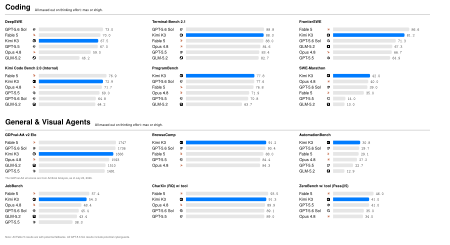
1 引言
在大语言模型（LLM）发展的很长一段时期，规模扩展意味着在部署前投入更多计算，在更多数据上训练更大的模型 [54, 45]。 推理模型的兴起将测试时计算确立为第二个扩展维度：OpenAI 的 o 系列扩展强化学习和测试时推理 [84, 85]；Anthropic 的延伸思考模型分配自适应思考预算，并交错进行推理与工具使用 [5, 6]；DeepSeek-R1 [40] 和 Kimi K1.5 [119] 表明，大规模强化学习可以从强大的预训练模型中激发复杂推理行为；Kimi K2.5 Agent Swarm [61] 则进一步将测试时扩展从串行推理推进到并行智能体协调。 这些进展使测试时扩展成为前沿研究的核心重点。 然而，开源模型生态在第二个维度上快速前进的同时，在第一个维度上的进展却较为缓慢：许多近期模型仍处于万亿级参数范围之内或略高于这一规模 [146, 29, 136, 121]。 当日益复杂的推理与智能体强化学习方法被应用于规模相近的预训练基础模型时，开源进展可能趋于收敛，而与最强专有系统的差距却在扩大。 对于 Kimi K3，我们同时沿两个扩展维度推进至前沿：将预训练基础扩展到前所未有的 3T 级参数，同时在 1M 上下文长度下扩展强化学习、推理强度和长程交互。
我们推出 Kimi K3，一个总参数量为 2.8 万亿、激活参数量为 1040 亿、上下文窗口最长达百万词元的原生多模态混合专家模型。 其架构沿序列长度、网络深度和模型宽度三个维度扩展信息流。 Kimi Delta 注意力（KDA） [57] 提供高效的长序列混合，并通过周期性交错插入门控 MLA 层来保留全局交互。注意力残差（AttnRes） [60] 使每一层能够选择性地关注所有前面层的表示。稳定 LatentMoE 将路由专家空间扩展到 896 个专家，每个词元激活其中 16 个，并通过归一化、SiTU-GLU 和分位数均衡，稳定极端稀疏条件下的优化。这些架构进展与改进的数据和训练方案相结合，使整体扩展效率相较 Kimi K2 [58] 提高约 。
我们将这一预训练基础与专门面向 1M 上下文测试时扩展设计的后训练相结合。 Kimi K3 在长程编程、通用智能体、通用推理和知识任务上进行强化学习，每类任务均覆盖多个推理强度水平。 训练环境包括可验证的搜索与专业知识工作、软件工程与内核优化、结合视觉反馈工具使用的多模态推理、持久化助手工作流程、网页开发，以及自主执行任务。 这些环境训练了一套通用的“推理、行动、观察、验证、适应”循环，往往跨越数百乃至数千次工具调用，以及累计数百万个上下文词元。 针对领域和强度专门训练的策略，通过多教师同策略蒸馏 [75, 135, 29] 整合为一个统一模型。
实现这一训练与运行方式，需要基础设施随架构复杂度、模型规模和轨迹长度共同扩展。 在 KDA 系统协同设计方面，我们开发融合内核、KDA 上下文并行和状态感知的前缀缓存，使 KDA 在设备内、设备间以及请求间都能高效运行。 在 2.8T 参数 MoE 预训练方面，MoonEP 通过静态计算形状和零拷贝通信实现完全均衡的专家执行，而内存高效训练与多模态编码器优化则在有限内存内维持利用率。 在百万词元智能体 RL 方面，我们的共置系统结合部分轨迹生成、外部 KV 缓存保留、自适应节流，以及可恢复的 microVM 沙箱，以保持长时间存续的模型与环境状态。 最后，专用内核以及缓存感知、预算感知的集群调度，将这些创新转化为可预测的生产服务。
由此得到的模型确立了新的开放智能前沿。 如图 1 所示，在覆盖长程编程、智能体、知识、推理和视觉任务的基准中，Kimi K3 的整体表现落后于最强的专有系统 Claude Fable 5 和 GPT-5.6 Sol，同时持续领先于我们评估套件中的其他开放和专有模型。
我们的贡献概述如下：
-
•
开放前沿水平的预训练。 我们训练了一个具有 2.8T 总参数、104B 激活参数和 1M 词元上下文窗口的原生多模态 MoE 模型。 KDA、AttnRes、稳定 LatentMoE，以及改进的数据和训练方案，共同使整体扩展效率相较 Kimi K2 提高约 。
-
•
面向多种推理强度测试时扩展的强化学习。 我们在通用、智能体和编程领域，以及多个推理强度水平上开展 RL，再将获得的能力整合到统一模型中。
-
•
面向数万亿参数、百万词元智能的基础设施。 我们引入了 KDA 系统协同设计；用于 2.8T 参数 MoE 预训练的 MoonEP 和内存高效基础设施；配备可恢复沙箱、支持百万词元智能体轨迹的共置 RL 系统；以及更多基础设施创新。
-
•
开放的前沿模型。 我们发布完整的 Kimi K3 模型权重，使前沿智能可用于研究、部署和进一步创新。
2 模型架构
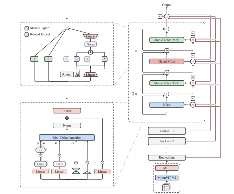
Kimi K3 架构旨在沿序列长度、网络深度和模型宽度三个互补维度扩展信息流。 在序列维度上，混合注意力在每个块内将三个 Kimi Delta 注意力（KDA） [57] 层与一个门控 MLA 层结合，为长上下文中的词元混合提供高效机制，同时保留选择性的高容量注意力（§2.1）。 在深度维度上，注意力残差（AttnRes） [60] 使每个模块能够从嵌入、当前块和先前各块中选择性检索表示，将信息访问范围扩展到传统的顺序残差累积之外（§2.2）。 在宽度维度上，每个注意力层之后都接有一个稳定 LatentMoE 层，用于稀疏通道混合；每个词元实际激活 896 个路由专家中的 16 个（§2.3）。 在原生视觉方面，MoonViT-V2 对图像和视频进行编码，轻量投影器在主干处理前将得到的视觉特征映射到共享嵌入空间（§2.4）。 这些组件与逐头 Muon（§2.5）共同构成统一架构，用于扩展词元、层和通道之间的信息流。结合改进的训练与数据配方，其整体规模扩展效率约为 Kimi K2 的 。 图 2 给出了架构概览。
2.1 混合注意力
Kimi K3 采用线性注意力与全局注意力的逐层混合，将 KDA [57] 与门控 MLA 结合。 每个块包含 3 个 KDA 层，之后接 1 个门控 MLA 层，混合比例为 。 这一模式在整个主干中重复。 下文分别介绍这两种注意力机制。主干末尾还额外放置一个门控 MLA 层，确保最后一层始终执行全局注意力。
2.1.1 Kimi Delta 注意力
KDA 使用逐通道遗忘门 [57] 扩展 Delta 规则递推 [105, 139]。 考虑隐藏状态序列 ，其中 表示词元位置， 是模型隐藏维度。 为便于说明，先考虑单个注意力头，其查询和键向量为 ，值向量为 ，递归状态为 。 KDA 在 Delta 规则更新之前执行逐通道衰减：
| (1) |
其中， 是逐通道的单步保留因子， 控制 Delta 规则的写入强度。
遵循 Kimi Linear [57]，KDA 将每个头的相关量参数化为
| (2) |
查询、键和值投影先应用 ，再应用 [139]；查询和键还通过 进一步归一化 [141]。 低秩投影与各头特有的偏置 为每个键通道生成细粒度的衰减 logit 。 我们将在下文的分块形式之后介绍从 到 的带下界映射。
分块并行形式
遵循 Kimi Linear [57]，KDA 在块之间递归，在每个块内部并行。 对于块大小 ， 将第 个块中的词元向量堆叠起来，其中 。 矩阵 表示进入块 时的递归状态。 对于位置 ，定义逐通道累积衰减为
| (3) |
与 Kimi Linear 相同， 按行堆叠 。 UT 变换得到 和 ，据此定义伪值项 。 给定传入状态 ，块 中的全部输出可并行计算为
| (4) |
对于矩阵 ， 将严格上三角元素全部置零，并保留下三角元素（含对角线）。 该掩码保证块内交互满足因果性；保留对角线是因为每个输出读取的是当前词元更新后的状态。 中的第一项携带先前各块的信息，第二项则对应当前块内部的交互。 UT 变换及分块形式的完整推导见 Kimi Linear [57]。
带下界的衰减
式 4 使用累积衰减的倒数 对每个块中的键进行重缩放。 由于 是若干取值在 内的保留因子的乘积，其倒数可能无界增长，并在有限精度运算中发生上溢 [140, 57]。 Kimi Linear 通过在对数空间计算相对衰减，并将每个块划分为更小的 词元计算块来控制数值范围 [140, 57]。 非对角计算块于是可以直接使用 Tensor Core 上的稠密矩阵乘法计算。 相比之下，对角计算块仍需显式执行位置对计算，这仍是块内计算的主要瓶颈。
Kimi K3 通过改变从衰减 logit 到单步对数衰减 的映射来解决这一瓶颈。 遵循 GDN 和 Mamba-2，Kimi Linear 使用负 Softplus 映射 [139, 24, 57]。 Kimi K3 则采用缩放 sigmoid，为对数衰减设置下界：
| (5) |
其中 是每个头可学习的对数尺度， 固定不变。 我们初始化 ，每个偏置 则按照文献 [57, 24, 139] 初始化。 在 下，每个保留因子均满足 ，一个 词元计算块内的累积对数衰减落在 内。 因此，相应的倒数重缩放因子小于 ，保持在 BF16 的动态范围之内。 这一有限范围使对角和非对角计算块都能使用稠密 Tensor Core 矩阵乘法，消除了按位置对计算对角块的路径。 这种参数化与既有工作的带下界递归门密切相关 [97, 26, 91]。 图 3 展示了衰减参数化的变化及其计算影响。
满秩门
2.1.2 门控 MLA
DeepSeek-V2 [28] 提出的多头潜在注意力（MLA）将每个词元的键值表示压缩为低维潜在向量 。 MLA 缓存 ，并在注意力计算中通过可学习的升维投影重建内容键和值，从而无需缓存每个头的完整键和值。 这种分解在保留全局词元间注意力的同时减小了 KV 缓存占用。 MLA 随后被 Kimi K2 和 Kimi K2.5 [58, 61] 采用，Kimi K3 也在周期性插入的全局注意力层中保留了它。
与 Kimi K2 和 Kimi K2.5 不同，Kimi K3 遵循 Kimi Linear [57] 的混合设计，在所有 MLA 层中采用无位置编码（NoPE）。 因此，这些层的查询或键都不应用显式位置编码。 穿插其间的 KDA 层提供位置敏感且具备近因感知能力的序列混合，MLA 层则提供不受范围限制的全局内容交互。 这种分工也避免了扩展上下文长度时修改位置编码参数，例如重新调整 RoPE 频率基数或应用 YaRN [92]。
此外，Kimi K3 为 MLA 增加了依赖输入的逐通道满秩输出门。 令 表示位置 处未门控的 MLA 输出，则门控输出为
| (7) |
门投影 为满秩，与 Kimi K3 中 KDA 采用的新参数化保持一致。该门使每个词元能够调节从全局注意力读取的各通道 [99]。
为纠正文献 [98] 在 Flash Attention 中发现的有偏舍入误差，我们在训练时将注意力输出保持为 FP32。 这一选择使输出计算块的片上空间占用翻倍；因此，我们重新设计训练内核，让它与 KV 暂存缓冲区复用空间，而非与查询计算块复用，从而释放共享内存以支持更深的 KV 流水线和更高的训练吞吐量。
2.2 注意力残差
标准残差连接 [43] 沿深度将此前全部信息压缩到单一状态 中，这一瓶颈类似于 RNN 沿时间维度的信息压缩。对于序列建模，Transformer 用注意力代替递归 [9, 126]，让每个位置能够通过依赖数据的权重选择性访问所有先前位置。注意力残差（AttnRes） [60] 将相同方法用于深度维度：每一层从所有先前层中选择性检索表示，而不是均匀累加。
完整注意力残差
分块注意力残差
为降低这一开销，我们将 层划分为 个块，每块包含 层。在块 内（层索引为 ），各层输出通过求和归约为单一表示 ； 表示该块前 层的部分和。我们设置 ，使词元嵌入始终作为一个信息源。跨块时，仅对 个块级表示应用完整注意力：对于块 中的第 层，值矩阵为
| (10) |
键和注意力权重遵循式 8 与式 9。最后的输出层再聚合全部 个块表示。在分块 AttnRes 下，内存与通信开销由 降至 ；这种块结构还限制了推理时的状态规模，使并行的块间结果能够通过在线 softmax [79] 更好地与顺序计算的块内部分和合并，显著降低推理时间开销。
实验表明，在不同模型规模下， 都能保留大部分收益 [60]；对于 Kimi K3，我们按每块 12 层将其划分为 8 个块，最后一块不足 12 层，计入嵌入层后共有 9 个块。
2.3 稳定 LatentMoE
同时增加专家池规模和激活专家数可以扩大专家的专业化空间，但传统 MoE 中每个选中的专家都会接收完整的 维词元表示，因此通信量和专家权重访存量随路由分支数增加。 潜在 MoE（LatentMoE） [31] 将完整模型宽度与路由专家宽度分离，使这种扩展变得可承受：共享专家保留全宽路径来执行通用变换，专门化的路由专家则在宽度为 的紧凑潜在空间中工作。这使 Kimi K3 能够将通道混合扩展到 896 个路由专家，每个词元激活 16 个专家，对应稀疏度为 56。
这种极高稀疏度放大了原始设计中的两种失效模式。 首先，路由路径将 、门控多分支专家前馈网络以及 串联起来，形成近乎连续四次矩阵乘法的链。 这一病态结构与 2.8 万亿参数规模相结合，导致路由分支的内部激活爆炸。 其次，对近 个专家进行负载均衡，超出了现有无辅助损失偏置更新能够保持良好表现的范围。 稳定 LatentMoE 通过三个组件解决这两种失效模式：在升维投影前加入 RMSNorm，并使用 Sigmoid Tanh 单元 GLU（SiTU-GLU）抑制激活爆炸，同时采用分位数均衡（QB）实现负载均衡。
如图 2 所示，该层沿用 DeepSeekMoE [22] 的共享专家与路由专家组织方式。 对于 ，共享专家直接处理 ；路由路径则将其投影为 ，把 分发给选中的专家，并通过 将其加权聚合结果映射回 ：
| (11) |
其中， 是聚合后的路由表示， 和 分别是共享专家与路由专家的前馈网络， 是由下文分位数均衡规则定义的路由权重。 Kimi K3 将每一层的全宽共享专家数量固定为 。
2.3.1 归一化 LatentMoE
2.3.2 Sigmoid Tanh 单元 GLU
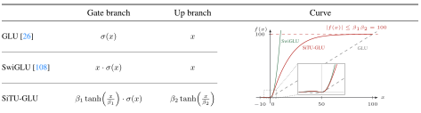
门控线性单元（GLU）使用 sigmoid 激活的门调节线性值分支，计算 [25]。 SwiGLU 将 sigmoid 门替换为 ，在 Transformer 中取得了很强的实验表现 [107]。 此后，SwiGLU 成为大语言模型中广泛采用的 FFN 设计，但对其实验有效性的完整解释仍有待研究。
然而，SwiGLU 中相乘的两个因子都无界，因此同一坐标上的大值同时出现时会产生激活离群值，并增加低精度运算中的溢出风险。 原始 GLU 的 sigmoid 门避免了门值无界增长，但未能保留 Swish 在正值区域近似线性的特性。 这促使我们设计一种激活函数，在控制大值增长的同时保留 SwiGLU 特有的局部响应和正半轴响应。 近期其他研究也探索了这一权衡的不同参数化方式 [51]。
为满足这些要求，我们提出 Sigmoid Tanh 单元 GLU（SiTU-GLU）。 SiTU-GLU 对 Swish 门的线性因子以及升维分支分别应用平滑限幅 ：
| (12) |
对于 Kimi K3，我们将门控分支的软限幅超参数设为 ，升维分支设为 。 缩放后的 在原点附近近似线性，在幅度较大时保持有界，使 SiTU-GLU 能在控制乘积中两个因子的同时保留 SwiGLU 的局部响应。 图 4 在相同切片上比较了 GLU、SwiGLU 和 SiTU-GLU 的分支定义与标量响应。
§ B 给出了局部展开、极限情形、严格输出界，以及与硬截断的比较。
2.3.3 分位数均衡
与基于辅助损失的路由 [32] 不同，Kimi K3 采用无辅助损失路由 [27]。 通过在用于 Top- 选择的路由分数上添加专家特有的偏置 ，实现负载均衡。 对于词元 ，路由器计算 并应用
| (13) |
由于 中省去了 ，它调节分发行为，但不改变混合权重或路由器基于梯度的优化。 原方法使用固定步长规则 更新 [27]，其中 用于权衡适应缓慢与负载振荡。 随着 LatentMoE 将每层的路由专家池扩大到 896 个，保持负载均衡变得更具挑战。 不均衡路由会拖慢专家并行训练，并可能使部分专家训练不足 [47]。
为解决这一局限，我们提出分位数均衡（QB），根据与目标负载匹配的路由分数分位数 [112, 113] 设置每个专家的偏置。 考虑一个包含 个词元的训练批次，通过 Top- 选择路由到 个专家，因此每个专家的目标负载为 个词元。 QB 通过一次前向传播推导下一步偏置。 路由将加偏置分数 上的 Top- 选择替换为 Top-：前 项是实际采用的路由，第 项则是阈值 ，专家必须超过该阈值才能进入词元 的 Top-。 从 Top- 路由中取得这一阈值，可以避免单独计算词元侧分位数。 随后选择每个专家的偏置，使专家 获得目标负载：在阈值固定时，候选偏置 下路由到专家 的词元数为
它关于阈值 单调递减。 假设不存在并列值，将该计数设为 ，就使 成为余量 中第 大的值，从而恰有 个余量高于阈值。 由于 ，它就是跨词元余量的 分位数，由此得到 QB 更新
| (14) |
余量由原始分数 减去加偏置阈值 得到，因此旧偏置仅通过阈值进入更新；第二行移除一个不改变 Top- 选择的公共偏移量。 为保证因果性，更新仅在下一步生效 [27]，即一个批次绝不会使用由其自身推导的偏置进行路由。 图 5 展示了 、 和 的情形，其中每个专家均获得目标负载 。 推理时最终偏置保持冻结。 均衡分配的推导见 § C。
直方图估计
2.4 原生视觉
Kimi K3 具备原生多模态能力：文本、图像和视频在同一上下文中由单一共享主干处理，无需事后进行模态对齐。 这一设计是 §1 所述长程视觉闭环行为的架构基础。渲染输出和生成它们的代码位于同一词元流中，模型能够编写代码、检查结果截图或视频帧，并迭代改进视觉产物——用户界面、图形和视频——无需跨模型交接。
MoonViT-V2
与 Kimi K2.5 的一个关键区别是，我们完全从零开始，使用下一词元预测训练 Kimi K3 的视觉编码器 MoonViT-V2。 既有做法（包括 Kimi K2.5 自身）使用 SigLIP 等经过对比预训练的模型初始化视觉编码器，前提是预训练的视觉知识能为模型提供更好的起点。 我们偏离这一做法，主要出于训练稳定性的考虑。 当预训练编码器连接到 LLM 时，联合优化会变得不稳定：由 SigLIP 初始化的 MoonViT-3D 持续表现出较高的梯度范数，且频繁出现尖峰；而 MoonViT-V2 在整个训练过程中保持稳定（图 6）。 使用下一词元预测训练还使编码器表示能够直接受语言建模目标塑造，而非受更偏向全局语义、较少关注细粒度文本和结构线索的对比损失塑造。 值得注意的是，MoonViT-V2 在各项视觉评估中与 SigLIP 初始化基线相当，表明在大规模多模态语言模型中，对比预训练并非初始化所必需。
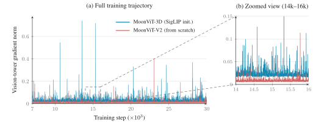
架构
这一训练配方建立在遵循 Kimi K2.5 [61, 59] 总体设计的视觉路径之上：视觉输入首先由 MoonViT-V2 编码，然后通过轻量 MLP 投影器映射到 LLM。 MoonViT-V2 是一个具有 27 层、约 0.4B 参数的视觉 Transformer，采用 RMSNorm，并移除线性投影和注意力投影中的所有偏置项，进一步稳定上述从零训练的优化过程。 与 MoonViT-3D 一样，图像和视频通过完全共享的参数处理：注意力分解为帧内空间处理和帧间时间处理，时间池化进一步沿时间维度压缩词元。 投影之前，采用 下采样的像素重排操作将视觉词元数降为四分之一，使最高 像素的输入能够在 1M 词元上下文内以可承受的成本处理。
2.5 逐头 Muon
遵循 Kimi K2，Kimi K3 采用 Muon [53] 优化其矩阵参数。对于注意力投影，我们进一步将其改进为逐头变体 [111, 146]：不对完整的 、 和 投影矩阵执行 Newton–Schulz 正交化，而是沿注意力头维度划分其动量矩阵，并分别对每个头的块执行正交化。 其直觉在于，整矩阵正交化将所有头视为单个耦合块，因此梯度或动量尺度较大的头会主导共享更新方向，而尺度较小的头得到的更新归一化不足；逐头正交化则平衡了各头的更新尺度。 实际中，这一设计使各头的学习动态更加均衡，并改善了较大规模下的训练稳定性。 它也略微降低了优化器开销，因为对高瘦的逐头矩阵块执行 Newton–Schulz 迭代，比对完整投影矩阵执行更便宜。
3 预训练
3.1 预训练数据
Kimi K3 的预训练采用精心筛选的语料，覆盖网页文本、代码、数学和知识四个主要文本领域，并配合大规模视觉语料。视觉数据涵盖图像描述、图文交错文档、OCR、感知、视频和视觉编程数据。数据流水线以 Kimi K2 [58] 开发、并在 Kimi K2.5 [61] 中改进的流程为基础。
文本数据
每个领域都通过基于规则的启发式方法、基于分类器的质量评分以及去重进行过滤，各领域的采样率由小规模模型上的消融实验确定。遵循 Kimi K2 [58] 的改写配方，我们使用多样化风格与视角的提示、分块自回归生成，以及对照源文档的忠实性校验，对知识和数学语料进行改写。
视觉数据
视觉语料遵循 Kimi K2.5 [61] 的分类体系，将开源数据集与内部过滤、合成和去重流水线结合。 训练时，坐标监督同时使用绝对坐标与归一化（[0,1]）格式，以实现精确且不易受分辨率影响的定位。 除传统的带文本描述图像外，我们还大幅扩展程序化多模态数据，将代码片段与其渲染结果配对，覆盖 SVG、3D 资产、网页、游戏和 CAD 示意图等领域格式。
3.2 扩展定律
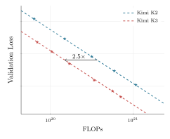
前文所述架构、数据和训练改进共同构成了新的模型家族。由于这些变化也改变了最优训练配置，我们开展专门的扩展定律研究，重新调整批大小、学习率、词元参数比（TPP）和模型形状等关键超参数。在留出的分布外（OOD）验证数据上评估时，图 7 的扩展定律曲线表明，这些改进共同使整体规模扩展效率达到 Kimi K2 的约 。表 1 详细比较了 Kimi K2 与 Kimi K3 的架构，突出展示了促成这一提升的结构变化。
扩展定律研究一致支持余弦衰减优于预热稳定衰减（WSD）[46]，因此我们将余弦衰减作为默认学习率调度。我们在固定最低学习率的条件下比较余弦衰减与 WSD。尽管已有研究报告 WSD 可以匹敌甚至超过余弦衰减，但我们观察到，两种调度的最优超参数明显不同。即使模型规模和训练词元预算相同，它们的最优峰值学习率与批大小仍存在显著差异。因此，使用同一组超参数比较两者可能会不公平地偏向其中一种，仅仅因为这些超参数更适合它。为保证公平比较，我们分别对每种调度独立进行扩展定律搜索。在各自最优的超参数设置下，余弦衰减始终取得比 WSD 更低的最终损失。
| Kimi K2 | Kimi K3 | ||
| 架构 | MoE | MoE | – |
| 层数 | 61 | 93 | |
| 总参数量 | 1.04T | 2.78T | |
| 激活参数量 | 32.6B | 104.2B | |
| 隐藏维度 | 7,168 | 7,168 | |
| 潜在 MoE 维度 | – | 3584 (0.5×) | – |
| 单个专家的 MoE 隐藏维度 | 2,048 | 3,072 | |
| 路由专家数 | 384 | 896 | |
| 每词元激活专家数 | 8 | 16 | |
| 共享专家数 | 1 | 2 | |
| 注意力头数 | 64 | 96 | |
| 稠密层数 | 1 | 1 | |
| 词表大小 | 160K | 160K | |
| 训练上下文长度 | 128K | 1M | |
| 注意力机制 | MLA | 混合 KDA–MLA | – |
| 激活函数 | SwiGLU | SiTU-GLU | – |
| 注意力层组成 | 61 MLA | 69 KDA + 24 MLA | – |
| MTP 层数 | 1 层 | 1 层 | |
| ViT 总参数量 | - | 401M | - |
| ViT 层数 | - | 27 层 | - |
| ViT 图像块大小 | - | 14 | - |
| ViT 注意力头数 | - | 12 | - |
3.3 训练配方
Kimi K3 采用原生多模态训练策略，从训练开始便联合优化语言和视觉，而不是在事后对齐阶段将视觉编码器嫁接到预训练语言模型上。在这一范式下，视觉词元和文本词元在统一的下一词元预测目标中交错出现，使共享主干从一开始就学习统一的多模态表示。
我们使用逐头 Muon 优化器（§ 2.5），结合 Kimi K2 引入的权重裁剪机制优化模型，并采用 QB（§ 2.3.3）实现 MoE 负载均衡。学习率使用余弦调度，线性预热占比为 。权重衰减始终设为 。
预训练从 词元的上下文长度开始，并在后续训练阶段扩展到 词元。
3.4 长上下文扩展
位置编码
Kimi K3 不使用显式位置嵌入（NoPE），而是通过 KDA 的递归门控与衰减机制隐式编码位置信息。 因此，模型能够直接外推到 1M 词元上下文，无需对位置编码进行任何修改，例如 RoPE 重缩放或插值 [92]。
长上下文数据
来自自然来源的长文档和视频包含大量低质量内容，包括近重复内容、二进制数据块、被截断的文件、视频片段，以及无效的机器生成日志。 因此，我们通过专门的清洗流水线处理它们，结合精确与模糊去重，并对视频补充逐帧感知哈希，同时进行基于启发式规则和分类器的质量过滤，以及结构验证。 由于真正连贯的长文档和长视频相对于短文本十分稀缺，我们对其上采样，使冷却阶段的长上下文分布不会被短序列淹没。 然而，仅有长度并不能带来长程能力。 为此，我们通过精心排列和拼接多模态文档及子任务，合成额外的长上下文数据，使嵌入其中的任务只有关注分散在完整 1M 词元上下文中的信息才能解决。 这使注意力机制在目标尺度上得到训练，并防止其退化为局部模式。
渐进式上下文扩展
Kimi K3 支持最长 100 万词元的上下文窗口。 我们遵循四阶段课程，随着训练推进逐步扩展上下文窗口，实现这一能力。 窗口在预训练阶段从 8K 扩展到 64K 词元，在冷却阶段从 256K 扩展到 1M 词元。 将成本高昂的长序列计算集中在总训练预算的一小部分内，既保持了课程的经济性，也让模型逐步适应越来越长的依赖关系。 使 KDA 层能够承受百万词元训练的序列维度切分方法见 §5.1.2。
4 后训练
4.1 方法
我们的后训练流程采用三个阶段： 通过监督微调（SFT）初始化基础智能体能力， 通过强化学习（RL）培养不同推理强度的专业领域专家， 再使用多教师同策略蒸馏（MOPD），将这些领域特定策略整合到单一模型中。
4.1.1 监督微调
SFT 阶段为后续 RL 阶段建立高质量的冷启动策略。 我们以先前 Kimi 模型的 SFT 流程为基础[58, 61]，扩展了 Kimi K3 的 SFT 数据集，大幅拓宽其对复杂智能体任务的覆盖。 具体而言，我们使用此前 Kimi 系列中面向特定领域的模型合成数据轨迹，随后执行多阶段验证和人工参与的标注。 为一致地表示这些复杂智能体轨迹，我们使用基于 XTML 的对话模板对所有数据进行序列化（eXtensible Token Markup Language，可扩展词元标记语言；详见第 F 节）。 这些步骤共同产出大规模指令数据集，赋予 Kimi K3 自适应推理、精确工具调用，以及在长程智能体场景中稳健执行任务的能力。 此外，我们从 SFT 阶段起采用量化感知训练（QAT），使用 MXFP4 权重和 MXFP8 激活（第 4.1.4 节）。
4.1.2 强化学习
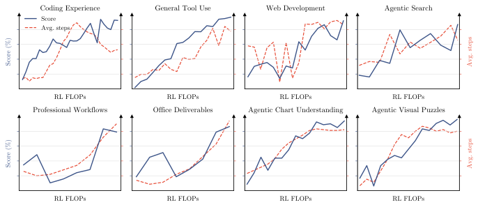
SFT 提供了扎实的冷启动基础，而 RL 对释放更高阶的推理和执行能力至关重要。 我们在三个广泛领域中扩展 RL，每个领域涵盖多种子任务，并在每一推理强度级别下为每个领域训练一个专家，而不是针对单项任务分别训练专门的 RL 模型： (i) 通用任务，涵盖通用体验、视觉、推理、忠实性、搜索能力和知识工作任务； (ii) 通用智能体，涵盖长程助手任务、深度研究和段落级写作；以及 (iii) 编程智能体，涵盖软件工程（SWE）、编程体验、内核任务和 Web 开发。 如图 8 所示， 扩大 RL FLOPs 能持续改善知识、推理、视觉、通用智能体和编程等多方面能力。 将这三个领域专家与 三个推理强度级别交叉组合，共得到九个专家模型。
算法
为缓解长程任务中加剧的长尾延迟，我们扩展了同步 RL 框架中的部分轨迹生成方案[119, 61]。 在每轮迭代的轨迹生成阶段，我们为 个提示中的每一个采样 个补全，维持 条活跃轨迹的工作负载。生成阶段无需等待所有轨迹结束，而是在完成轨迹的比例达到 （即 条）时即暂停，使策略优化无需等待执行落后的轨迹。在沙箱基础设施的支持下（第 5.3.2 节），暂停的轨迹进入队列，并在下一轮迭代开始时优先恢复。 一个提示的全部 个响应完成后，会立即被发送进行策略优化，优化采用 Kimi K2.5 的算法[61]。 在部分轨迹生成方案下，单条长程轨迹自然会跨越多轮迭代，由此产生的数据陈旧性可能威胁训练稳定性。 我们的策略优化算法通过逐词元正则化，天然能够容忍这种极端离策略情形。该正则化将策略更新约束在局部邻域内，使算法能够稳健处理高度陈旧的数据，并保持训练稳定。
推理强度 RL
为精细调节推理强度并最大化词元效率，我们在 RL 期间实施逐问题的预算控制机制[61]。 我们为每个问题 关联一个由冷启动模型估计的初始词元预算 ；对于总词元预算 超过缩放后阈值 的轨迹，将任务奖励覆盖为 。 对于通用任务， 衡量思考词元数；对于智能体任务， 则累计输出词元数，其中包括推理轨迹和工具调用参数。 训练围绕预算乘数 采用分阶段课程。我们首先以相对较大的 训练一个最大预算变体，同时仍限制最大预算，以抑制过度思考。然后将 退火到较小值，得到 high 和 low 推理强度的专家模型。 的调整在人工参与的指导下按领域配置。我们汇集所得专家在所有推理级别下生成的轨迹，用于监督微调和多教师同策略蒸馏。
智能体式生成奖励模型
4.1.3 多教师同策略蒸馏
4.1.4 面向部署的后训练
MXFP4 量化感知后训练
草稿模型微调
对于复杂的长程智能体模型，优化推理效率对提供服务至关重要。 Kimi K3 在预训练时使用一个多词元预测（MTP）层，其结构与主干模块相同。 由于 EAGLE-3[71] 的草稿模型由单个解码器层组成，且结构与 MTP 层相同，我们将预训练的 MTP 层微调为 EAGLE-3 风格的草稿模型，冻结目标模型，仅更新草稿层及其特征融合投影。 遵循 EAGLE-3 的训练时测试协议，草稿在训练期间展开七步；第一步之后，最新位置的目标模型侧特征不可用，草稿便使用自身先前步骤的输出，与推理时递归生成草稿的过程一致。
草稿输入融合目标模型的低层、中层和高层特征，分别取自第 1、第 4 和最后一个 AttnRes 模块的输出（第 2.2 节）。 这些特征拼接后，通过无偏置矩阵 投影到隐藏维度。该矩阵初始化为 ，使融合表示在初始化时与高层特征 一致，即 MTP 层预训练时使用的输入；随后在微调期间逐渐学会纳入低层和中层特征。
4.2 RL 任务合成与智能体环境
我们的 RL 框架能否奏效，高度依赖丰富、多样且可稳健验证的环境。为支持复杂长程任务上的可扩展训练，我们设计了一系列专门的白盒环境和任务合成范式。
4.2.1 统一白盒 RL 环境
使用单一固定的智能体运行框架训练，可能使模型过拟合特定工具模式、系统提示、上下文管理机制或交互协议。为此，我们开发了统一白盒 RL 环境，将智能体运行框架表示为一组可配置、可组合的模块，包括工具接口、系统提示、上下文管理策略、技能、记忆、子智能体及其他组件。通过配置组合这些模块，该环境可以实例化 Kimi Code[56]、Claude Code[14]、Codex[19]、OpenClaw[86] 和 Hermes[44] 等主流运行框架，也可以实例化全新的框架。在 RL 训练期间，我们为不同任务组动态构造不同运行框架配置，让 Kimi K3 接触这些模块的多样组合，而不是局限于单一运行框架的惯例。这种抽象也能方便地支持多种任务领域的 RL，为训练更通用的智能体提供可扩展基础。
4.2.2 知识图谱引导的任务合成
动机与概述
后训练任务的质量和多样性在很大程度上取决于其源材料。细粒度概念引导的检索能够发现专业且覆盖不足的知识，而跨多样概念采样则能扩大领域覆盖。为大规模控制粒度与覆盖范围，我们构建了一个可自我演化、按层级组织的知识图谱，由智能体通过覆盖知识密集领域和编程领域的网络规模探索持续扩展。图 9 展示了任务合成流程。
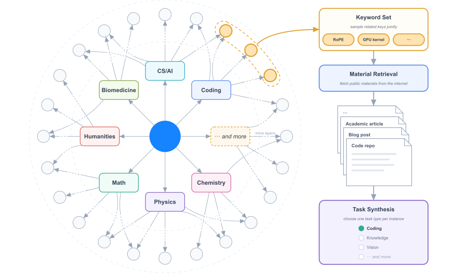
智能体驱动的知识图谱构建
我们通过智能体驱动的递归扩展，将知识图谱构建为有向无环图。扩展过程始于一组预定义的粗粒度种子节点。随后为每个节点分配一个智能体实例，通过多次网络搜索调查相应概念。添加新节点前，智能体先探索现有图谱，识别等价或相关概念，在适当情况下复用已有节点，并尽量减少重复。无论智能体先发现哪一个端点，边始终从较粗的概念指向较细的概念。随后为新增节点分配智能体继续探索。当负责的智能体判断当前概念已经足够不可再分时，该分支停止扩展。
材料检索与任务合成
为实现期望的领域和任务类型分布，系统在不同粒度层次上采样节点，既可单独采样，也可按相关组合采样。采样节点产生的关键词与知识图谱中其祖先节点的上下文信息相结合，构成网络查询。检索到的现实材料被汇集起来，交由合成智能体生成多种类型的训练任务。
4.2.3 智能体环境中的可验证问题
我们在智能体环境中的可验证问题上训练 Kimi K3。典型例子包括：多步骤复杂信息搜索，模型规划研究、逐步从网络收集证据并给出可验证答案；投资银行、数据分析和法律实务等专业人士的真实日常工作，模型分解复杂请求，在沙箱中操作领域工具，经过数十至数百步完成交付物；以及针对 STEM 问题、视觉谜题和图表理解的多步骤可验证视觉推理。每条视觉推理轨迹都在配备独立沙箱中 Python 解释器的智能体环境内生成：模型迭代编写并执行代码，对输入图像进行裁剪、缩放或变换，执行精确计算，或验证中间结果，并在多轮交互中将执行输出（包括生成的图像）作为新的观测。随着模型学会执行更多图像操作并收集更多观测，其复杂视觉推理任务表现持续提升。
4.2.4 内核优化任务
为增强 Kimi K3 的 GPU 内核优化能力，我们从 Flash Linear Attention[142] 等高质量 GitHub 仓库中获取素材，构建了从单算子内核到融合大型内核的大规模内核任务集。该任务集涵盖 CUDA、Triton、CuTe DSL、Gluon、ThunderKittens[110] 和 TileLang[130] 等多种 GPU 编程方式，以及广泛使用的 GPU 架构和 BF16、FP8、FP4 等数值格式。奖励同时评估正确性和性能：每个内核提供一个 PyTorch 参考实现，数值误差超过预定义阈值的解法奖励为零。性能以专家实现为基准评分，达到其水平获得 0.5 的奖励，接近硬件 roofline 上限时奖励趋近于 1。为确保奖励反映真实优化，我们开发了投机检测系统，对 CUDA 图重放、输入缓存和降低精度等奖励投机策略施加惩罚；随着 Kimi K3 开发期间发现新的投机策略，我们持续加入新的防护措施。
4.2.5 个人助手任务
针对长程个人助手任务，我们为 Gmail、Notion、Slack 和 Canvas 等广泛使用的应用开发了逼真的模拟实现。这些实现保留真实应用的核心语义，同时无需外部 API，也不受限流约束，即可支持可复现的大规模交互。基于这些模拟应用，我们设计了受人力资源、法律服务和金融等现实专业工作流启发的复杂任务。在每项任务中，智能体跨越多个模拟日，在持续存在且不断演化的环境中工作，遇到分布在多个应用中的数十个相互依赖事件。单次轨迹生成可能涉及数千次工具调用和数百万上下文词元。每个事件都有独立的评估标准，由确定性规则或基于大语言模型的评估器评判。初始工作空间由智能体自主上网检索参考材料，并将其转换为一致且与任务相关的环境。我们还扩展了 RL 框架以支持这种动态演化环境，对复杂事件流及其引发的世界状态转移进行建模。
4.2.6 自主执行任务
我们引入自主执行任务（AET），这是一种通过验证器参与闭环优化来训练长程智能体智能的环境范式。每个任务规定初始状态、受约束目标、基于工具的动作空间、执行预算和独立验证器。智能体只能看到目标、上下文、约束和验证接口，没有参考轨迹或预定义流程，必须自主完成任务分解、工具选择、规划、错误恢复和终止。奖励依据验证器对最终环境状态的评估，而不是智能体自报的完成情况。我们设计多类验证器以支持不同环境，包括黑盒系统复刻（图 10）、量化因子发现和税务审计。在每个环境中，智能体迭代提交解法、接收验证反馈并改进策略，训练出提出假设、采取行动、分析反馈和适应调整的通用循环。为缓解奖励投机，我们隔离智能体与验证器，将提供诊断反馈的公开验证器与评估留出场景的隐藏验证器配合使用，并在限制提交预算的条件下采用基于惩罚的奖励。
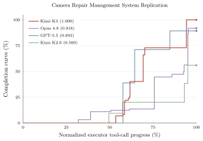
4.2.7 Web 开发任务
我们构建了覆盖典型场景、由专家整理的多样化 Web 开发任务集。输入从单行场景描述到多段规格说明不等；产物涵盖网站、交互游戏、3D/WebGL 场景、数据可视化、SVG 和全栈应用。每项任务均在容器化沙箱中运行，并在多种智能体运行框架下生成轨迹，以促进跨框架泛化，而非依赖单一固定框架。奖励由两部分组成：确定性检查与内部奖励模型的模型评判。确定性检查对应用行为执行功能测试，并为复刻参考产物的任务评估结构相似度和像素级相似度。如果项目构建失败、运行出错，或仅伪造产物而未实际实现，则奖励归零。模型评判使用其他模型检查源码，或查看并交互操作输出产物。
5 基础设施
Kimi K3 集合了三项很少同时出现在单个模型中的系统挑战：混合 KDA 注意力、3T 级稀疏多模态训练与推理，以及百万词元智能体工作负载。 我们的基础设施围绕这些挑战，在模型整个生命周期内开展协同设计。 在架构层面，高性能 KDA 内核与上下文并行，使递归形式在训练和推理中都能高效地运行于单个设备内部及多个设备之间。 在预训练期间，均衡的专家执行、更低的内存占用和通信重叠调度，使大规模运行保持较高利用率。 在 1M 词元智能体 RL 期间，分层状态管理与可恢复沙箱执行使长轨迹能够跨迭代保留。 最后，感知状态的 KDA 前缀缓存、专用推理内核，以及感知缓存与预算的调度，将这些效率收益转化为可预测的生产服务。
5.1 KDA 的算法与系统协同设计
KDA 用固定大小的递归状态 （§2.1.1）替代 softmax 注意力不断增长的键值缓存，其串行更新给并行执行带来挑战，但换来了传输与复用成本较低的固定大小状态。 下述设计在两个执行层面解决前一问题并利用后一优势：设备内部采用融合内核，设备之间采用 KDA 上下文并行。
5.1.1 面向不同运行场景的 KDA 内核
KDA 状态的串行依赖与 GPU 偏好的大规模、均匀并行相冲突，并在不同执行场景中表现为不同瓶颈。 我们为每种场景设计专门的内核。
用于训练与预填充的分块内核
面向长上下文预填充的设备内上下文并行
张量并行将注意力头划分到不同设备，却不会缩短递归链，因此在纯 TP 部署下，当每个进程仅持有少量注意力头时，超长序列预填充会使大多数 SM 空闲。 关键观察在于，每个片段的状态转移可以独立于传入状态求值，并在之后精确组合。 因此，一个自动的 SM 级上下文并行（CP）规划器 [143, 142] 将序列划分到单个进程的多个 SM，并行计算各片段的转移，再合并它们，恢复每个片段的精确初始状态。 与 §5.1.2 中跨设备的 KCP 不同，这种并行完全发生在设备内部，不产生跨设备通信。
KDA 解码面临与训练和预填充不同的挑战。我们在 §5.4.2 中详细讨论这些挑战。
5.1.2 KDA 上下文并行
softmax 注意力与线性注意力的上下文并行通信开销存在根本差异。 softmax 注意力要求各进程交换键值块，其大小随序列长度增长 [72]。 线性注意力则用固定大小的递归状态 承载前文上下文。 已有上下文并行方法利用普通线性注意力的加法递归：每个进程计算本地词元从 出发生成的状态，再对前面进程的这些本地状态求和，恢复传入状态 [115, 114]。
然而，这种直接求和对 KDA 并不足够。 回顾式 1，KDA 按 更新状态，其中 。 KDA 的 Delta 规则在加入当前写入量之前，先将依赖词元的矩阵 作用于传入状态。 因此，一个本地序列片段的作用取决于进入该片段的状态，无法仅由从 计算出的状态确定。
为保留这种依赖，我们引入 KDA 上下文并行（KCP），将每个片段的作用分解为两个可在本地计算的量：作用于传入状态的累积转移，以及从零开始在本地生成的状态。 沿用 §2.1.1 的分块记号，我们用 表示进程 的片段内、处理 个本地词元后的递归状态，因此 表示离开进程 并进入进程 的状态。 用 表示改从 开始执行相同递归得到的状态。 对于进入 个上下文并行进程中第 个进程的任意状态，处理 个本地词元后的状态为
| (17) | ||||
其中， 表示前 个本地词元的累积转移。 第一项包含本地词元生成的状态，第二项则通过本地 KDA 更新传播来自前面进程的上下文。 在 时， 与 这两个量都可以仅根据本地词元计算，在 可用之前就得到；它们正是各进程彼此交换的片段。
式 17 中的求和表明，每个状态都完全由本地计算出的片段组合而成。 这些进程级更新满足结合律，因此可通过前缀扫描 [77] 恢复每个进程的传入状态。 每个进程首先在本地计算 和 ，随后通过一次 all-gather [142] 交换两个张量。22 2 这一构造建立在 DeltaNet 上下文并行 [143] 的基础上。 KDA 实现见 FLA PR #691。 all-gather 之后，进程 按顺序处理同一文档的先前片段，重建 ：从 出发，对每个片段应用 。 因此，KCP 只需一次固定大小的 all-gather 来同步递归状态，并实现计算量的线性扩展。
5.2 3T 级预训练基础设施
Kimi K3 预训练结合了带虚拟阶段（VP）的流水线并行（PP） [48, 81]、专家并行（EP） [66]、ZeRO-1 数据并行 [100]、Pipeline ZeRO-2 梯度分片 [146]，以及上下文并行（CP，§5.1.2） [50]。 MoE 层采用在各 EP 进程上复制的共享专家，专家分发和合并所需的 all-to-all 通信与计算重叠，以隐藏延迟。
3T 级原生多模态预训练面临三个关键问题：（i）EP 进程之间的词元负载不均衡；（ii）激活、梯度与优化器状态超出内存预算；（iii）视觉编码器高度可变的计算暴露在关键路径上。 后续小节依次解决这些问题：完全均衡的专家并行 MoE 训练（§5.2.1）、内存高效训练（§5.2.2），以及多模态编码器优化（§5.2.3）。 图 11 展示了最终执行调度。
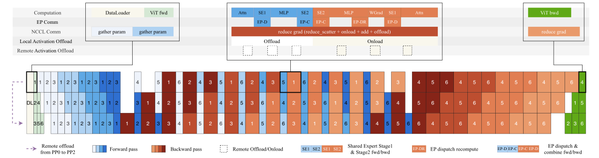
5.2.1 完全均衡的专家并行 MoE 训练
传统 EP 方案中的词元负载在各进程之间不均衡。 由此产生的计算不均衡降低训练吞吐量，路由专家激活的形状动态变化还会造成严重内存碎片。 因此，我们提出 MoonEP33 3 https://github.com/MoonshotAI/MoonEP，一种借助动态冗余专家实现完全负载均衡的 EP 方案。 MoonEP 保留 DeepEP [148] 等传统方案的整体计算流程，并额外引入冗余专家的在线规划与迁移。 前向传播时，我们根据当前微批次和当前层的路由器输出规划冗余专家，并在路由专家计算之前预取它们。 反向传播时，我们将它们的梯度暂存于本地归约缓冲区，计算完成后再归约回它们所属进程的梯度缓冲区。
以有界冗余专家实现完全均衡
在线规划
在每个训练步骤计算精确最优解的成本过高。 因此，我们使用整数线性规划（ILP）离线求出代表性场景的精确解作为参考，再设计近似最优、开销可忽略且始终遵守 上界的 GPU 规划内核。
零拷贝通信
完全均衡也简化了通信路径。 我们实现融合的置换/逆置换算子，由规划内核预先计算每个词元的目标位置，使词元直接发送到远端进程按专家分组的位置，并将通信缓冲区的视图直接返回给计算，消除中间拷贝。 在最坏的不均衡情况下，DeepEP 要支持同样的无拷贝数据路径，需要大小为 的通信缓冲区；MoonEP 则因完全均衡而只需要固定的 缓冲区。
基于静态形状的免同步执行
在传统 MoE 实现中，每个专家的词元数会随步骤和层变化，主机必须在每层启动专家计算之前与设备同步，以获取实际计算形状，导致层间流水线停顿。 完全均衡时，每个进程恰好收到 个词元，所有层的计算形状均静态已知。这消除了逐层 MoE 主机同步，并缓解主机侧的内核启动开销。
专家 GEMM 的调度与重叠
即便各进程的总负载完全均衡，进程内部不同专家的词元数仍存在偏斜；固定顺序、不了解工作负载的调度会将这种偏斜转化为各 SM 工作单元完工时间的不均衡。 因此，我们使用感知工作负载的调度器安排路由专家 GEMM，在启动前根据当前词元分布调整参数，并在执行期间保持参数固定。 轻量级启发式方法使用基于硬件指标的解析成本模型选择这些参数，关键系数通过离线自动调优校准。 对于共享专家，我们将其 GEMM 分派到独立流，使其与其他内核重叠。
5.2.2 内存高效训练
统一激活管理器
内存高效 MoE
内存高效注意力残差
对于注意力残差，我们基于 Block AttnRes 设计配套优化。 块表示只在边界层生成一次，随后由所有后续层共享，并直接驻留于 GPU。 AttnRes 计算整体采用检查点机制包装，使每层为反向传播保存的激活与标准残差架构相同。 对于流水线并行，我们采用基于缓存的流水线通信 [60]，只在阶段间增量传输新生成的块，并在微批次结束后立即释放，达到内存占用的理论下界。
均衡各 PP 进程的激活
在交错式 1F1B 流水线并行中，由于流水线预热，激活在各 PP 进程之间分布不均，驻留激活数量随 PP 进程编号增大而减少。 为避免内存耗尽（OOM），我们使用 Mooncake Transfer Engine [96] 将激活远程卸载到其他 PP 进程的内存，实现各 PP 进程之间的激活内存均衡。
Pipeline ZeRO-2 梯度分片与卸载
除了激活外，我们使用 Pipeline ZeRO-2 梯度分片 [146] 将梯度分片到数据并行（DP）进程。 进一步地，我们将分片梯度存储在 CPU 内存中，以降低 GPU 内存峰值，同时在 GPU 上保留双梯度缓冲区。 梯度跨 DP 进程归约到双梯度缓冲区后，再累积到 CPU 分片中。
基于 P2P 的 Muon 正交化
分布式优化器将参数均匀分片到 DP 进程，而 Muon 的 Newton–Schulz 正交化需要完整参数矩阵，因此每次更新之前必须通过通信汇集完整参数。 朴素方法在每个进程上对整个参数缓冲区执行 all-gather [73]，不仅在大规模运行时使通信成为主要瓶颈，还产生可观的内存占用。 我们改为让每个进程通过与对应所有者进程的点对点（P2P）通信，仅获取其本地负责参数的分片，从而消除全参数缓冲区，同时降低内存占用与通信量。 通信和计算进一步以模型分块缓冲区为粒度流水化，以隐藏通信开销。
5.2.3 多模态编码器优化
多模态编码器中的动态 CP
在长上下文多模态训练中，大图像和长视频显著增加视觉编码器的计算时间，并造成严重的设备间负载不均衡。 为此，我们将上下文并行扩展到这些大样本。 单张大图像沿图像块维度划分到多个设备，并通过在 CP 进程之间汇集键值对（gather-KV）来计算注意力。 此外，我们将每个 CP 组分为若干子 CP 组，以负载均衡方式将多张大图像分配给它们，避免通信占比随规模增长。 这同时降低了大视觉样本的编码器延迟和跨设备负载不均衡，使剩余编码器计算能够隐藏在流水线气泡中。
在 PP 气泡中执行编码器计算
5.3 1M 智能体 RL 基础设施
在有限计算预算下，将 Kimi K3 这样的大模型的智能体 RL 扩展至百万词元上下文，使资源效率成为首要目标。因此，我们开发了用于高效训练与轨迹生成的长上下文 RL 基础设施，以及支持长程环境交互的高性能、可恢复沙箱。
5.3.1 长上下文 RL 基础设施
我们采用训练与轨迹生成共置的 RL 训练方式 [58]，将每个 1M 上下文 Kimi K3 RL 实验控制在数百个 GPU 以内，并使用部分轨迹生成 [119] 降低超长轨迹带来的尾部延迟。这一设计提高了硬件利用率，但长上下文轨迹生成会为保留 KV 缓存引入额外 DRAM 需求，与训练侧状态竞争资源。此外，要让预填充和解码都达到较高效率，必须谨慎管理前缀和调度请求。
外部 KV 缓存池
在 1M 上下文多步轨迹生成中，前缀 KV 缓存未命中的代价极高。部分轨迹生成使这一问题在每次迭代开始时更加严重，因为前次迭代中许多未完成的长预填充请求会同时到达。推测解码进一步加快了相对固定工具调用间隔内的请求周转，增加前缀块的更替。这些问题可能触发抢占并降低缓存命中率，而命中率对长上下文 RL 至关重要。
因此，我们通过回写设计，将前缀保留与 GPU 驻留解耦。 活跃解码块保留在 GPU KV 缓存中，可复用的空闲前缀则仅在从 GPU 淘汰时，回写到 CPU DRAM 中的外部 KV 缓存池，并在下一次复用之前预取回来。 KDA 状态与对应 MLA KV 缓存块一起卸载和预取，使两者生命周期保持一致。 相比直写策略，该策略仅为离开活跃解码路径的前缀消耗 CPU DRAM 与传输带宽，避免为仍驻留且活跃于 GPU 的块创建冗余 CPU 副本。
为给外部池提供充足 DRAM，我们在一次训练迭代结束后将训练状态（模型权重和优化器状态）卸载到 NVMe。一次轨迹生成迭代结束后，释放该池，以避免与训练工作负载争用资源。
轨迹生成自动节流调度器
在多步轨迹生成中，上下文随轨迹推进逐渐增长，因此基于完整轨迹平均长度设定固定并发度既难以估计，又会在早期过于保守。 反过来，将并发度设得过高会在后期造成 KV 缓存压力，并可能触发抢占。 因此，我们在 LLM 请求调度层设计自动节流机制，利用活跃请求数、排队请求数和 KV 缓存利用率等运行时信号，动态控制发送给推理引擎的请求数量。 这既保证轨迹生成早期有较高利用率，又在 KV 缓存压力上升时降低并发度，无须手工调优即可避免负载不足和过载。
为非策略模型前向计算复用梯度缓冲区
RL 损失计算往往需要仅执行前向传播的非策略模型，例如参考模型，其权重过大，无法常驻 GPU。 我们将这些权重保留在 CPU 内存中，只在需要时才将其加载，并使用策略模型的 FP32 梯度缓冲区存储作为其参数张量的底层存储。 这复用了现有 GPU 内存，无须额外分配，也不会造成碎片；由于之后计算真实梯度时会覆盖这些缓冲区，因此仍然安全。
借助 ZeRO-2 梯度分片与卸载（§ 5.2.2），Kimi K3 RL 训练中的每个 GPU 只为两个 VPP 分块保留梯度缓冲区。 我们将参考权重逐块流式加载到这些槽位：一个槽位用于当前前向计算，另一个预取下一个分块，从而在不增加 GPU 内存的情况下隐藏拷贝开销。
5.3.2 沙箱基础设施
我们使用多种沙箱运行时，以支持 Kimi K3 后训练和评估的多样化需求，包括传统的基于容器的运行时、GPU 沙箱运行时，以及最值得关注的新型基于 microVM 的沙箱运行时 AgentENV。
AgentENV44 4 AgentENV 已开源，地址为 https://github.com/kvcache-ai/AgentENV 由我们与合作伙伴共同开发，是专为智能体 AI 工作负载设计的沙箱系统。 它围绕三个核心设计目标构建：
-
•
高保真隔离沙箱运行时 随着智能体能力增强、任务难度提高，它们往往会更积极地探索，甚至可能尝试奖励投机。 一方面，这带来了独特安全挑战：在使用传统容器沙箱运行时的早期实验中，我们观察到多次由非预期智能体操作引发的内核崩溃和死锁。 另一方面，我们希望尽可能允许探索，以免限制智能体能力；复杂任务也需要接近真实环境的沙箱，例如，智能体应能够按需挂载磁盘、运行容器，甚至启动虚拟机。 AgentENV 借助 Firecracker [2] 运行隔离 microVM，提供了容器运行时难以达到的隔离性与保真度。
-
•
适用于智能体 RL 的灵活沙箱生命周期 在底层，AgentENV 支持沙箱状态的增量检查点与恢复，保存检查点时只保存自上次检查点以来被修改的内存页，实现了低至 133 ms 的检查点延迟与 49 ms 的恢复延迟。 在此基础上，AgentENV 提供三项有助于提升智能体 RL 效率的高层操作。 （a）暂停与恢复：暂停的沙箱不消耗内存或 CPU 资源，因此当智能体等待模型推理结果时可以暂停沙箱，而等待可能占据沙箱生命周期的高达 98%。 （b）分叉：分叉从原沙箱的精确状态创建新沙箱，同时让原沙箱继续运行，适合无副作用的奖励评判。 （c）快照：可以定期保存沙箱快照，以便发生错误时恢复。
-
•
高效率与高密度 在我们的工作负载中，可能需要在数秒内创建数万个沙箱，每个沙箱都具有独特的一组镜像。 我们采用 OverlayBD [68] 镜像格式，并结合定制 ublk 驱动实现、存储层共享和 P2P 传输，在大规模场景下实现亚秒级启动延迟。 我们还通过写时复制内存和页缓存优化进一步降低内存占用，在真实工作负载中实现最高 6.5 的内存超分配比。
在 Kimi K3 的整个训练与评估过程中，共基于 1,505,678 个镜像创建了 51,219,741 个沙箱。
5.4 推理与在线服务
Kimi K3 的服务部署从生产侧呈现了同样的挑战：混合 KDA–MLA 架构维护两类本质不同的缓存，必须在百万词元上下文中联合管理；新模块与高度稀疏的专家需要各自专用的内核；生产流量混合了单请求成本相差三个数量级的请求。 下述设计从三个层面应对这些挑战。 在引擎层面，感知 KDA 的前缀缓存将固定大小递归状态打包到与 MLA KV 缓存相同的分页池中，使长前缀可跨请求复用。 在设备层面，面向 KDA 解码、Block AttnRes 和稀疏潜在 MoE 的专用内核尽量降低每词元延迟与内存流量。 在集群层面，感知缓存的亲和调度与基于预算的准入控制，将这些效率收益转化为可预测的服务。
5.4.1 感知 KDA 的前缀缓存管理
Kimi K3 的混合架构使前缀缓存变得复杂：KDA 递归状态和 MLA KV 缓存在大小与生命周期上存在根本差异，但缓存前缀只有在两者都能于同一边界一起恢复时才可复用。 因此，我们设计感知 KDA 的前缀缓存，对两类缓存进行联合管理，从统一分页布局，到细粒度前缀复用，再到并发调度下的一致性，使百万词元前缀能够低成本保留并跨请求复用。
混合 KDA–MLA 注意力的统一缓存布局
每个 Kimi K3 块由三个 KDA 层和一个门控 MLA 层组成，它们的缓存存在根本差异。 MLA KV 缓存随序列长度增长并按词元分页，而 KDA 递归状态大小固定，每个请求仅有一份。 若分别维护管理器，就会重复实现分配、淘汰和传输逻辑。 因此，我们将 KDA 状态打包到与 MLA KV 相同的分页块池，将页面统一为相同字节大小，让两类页面共用同一套分配、引用计数与淘汰实现。 在页面内部，所有头的状态逐头连续存储，使每个头的字节流自成一体，并作为跨节点传输的最小单位。 在预填充/解码分离部署下，若预填充节点与解码节点采用不同 TP 度，重布局会在传输路径上完成，无须 GPU 侧重排。 这种不对称性在开发期间很有帮助：任何混淆类型的访问都会产生无意义数据，而非看似合理的数据，相当于对池化布局进行零开销的健全性检查。
KDA 前缀缓存优化
基于块哈希的前缀缓存以一个物理块为粒度复用 KV 缓存：只有完整块才会计算哈希，因此只有与块边界对齐的前缀可以复用。
在 Kimi K3 中，这种耦合不再适用。块哈希匹配要求所有层共享同一块大小，而前缀命中只有在命中边界的 KDA 状态已持久保存时才可复用。KDA 层为每个序列维护一个较大的递归状态，而不是逐词元条目，因此只能负担在稀疏边界处保存状态快照；共享块大小由此被迫达到 1024–6144 个词元。又因为哈希与存储块绑定，哈希粒度也同样粗大，尽管单看 MLA 的逐词元条目，本可支持细得多的块。在如此粗的粒度下，缓存几乎失去用途：短于一个块的请求永远无法复用，分块预填充也只有跨过完整块边界后才能导出可缓存前缀。
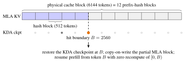
我们因此将两种粒度解耦。前缀哈希在 MLA 页面内部细粒度的哈希块上运行，例如 512 个词元，而物理块仍是较粗的分配单位。对于 KDA，对齐方向则相反：递归状态检查点只保存在 MLA 哈希端点的一个稀疏子集上，因为查找只能引用这些位置。
预填充期间，尚未填满的 MLA 页面按其最后一个完整哈希块的链式哈希注册到前缀缓存索引中；每个哈希覆盖所有先前哈希块，因此端点匹配就能确认截至该位置的完整前缀匹配。随着页面填充，注册端点不断前移。与此同时，每次前向传播之后，KDA 内核都会将处理过的最后一个与哈希对齐位置的递归状态持久保存。检查点很大，因此随着请求推进，被后续检查点替代的中间检查点会被回收，而对话轮次边界处的检查点则保留以供跨请求复用。缓存检查点是只读快照：命中时，在下一次前向传播前将其复制到请求私有的运行状态中，以恢复状态；新检查点写入全新槽位，因此其他请求可见的检查点绝不会被原地修改。
并发调度下的一致性
其余设计要点各自由共享未填满块时的一种具体故障模式决定：在这种场景下，命中块既是共享缓存条目，也是私有请求继续增长的位置，同时 MLA 和 KDA 缓存组必须就每个命中边界达成一致。 首先，所有缓存组从同一共享空闲列表分配块，因此为一个组分配私有副本可能淘汰另一个组刚命中的块；所以，在进行任何分配之前，必须先在所有组中固定每个命中块。 其次，复制到私有块的操作是在前向传播即将开始时由 GPU 执行，因此当前调度步骤内新分配或注册的块，仍可能向读者提供上一所有者的字节；在复制完成前，这类块被排除在匹配之外。 第三，只有所有 KDA 组都存在对应检查点时，检查点才能恢复请求，因此淘汰某个组的检查点时，会以原子方式使其他组中的对应检查点失效：一个检查点要么在所有组中均可命中，要么在所有组中均不可命中。 通过这些机制，每个已注册状态始终严格对应其声明的词元前缀，混合 KDA–MLA 模型的前缀缓存因而达到与全注意力模型相同的通用性：任意共享前缀都可以在任意 512 词元边界处复用，而不受请求长度、分块方式或调度交错影响。
5.4.2 高性能内核
KDA
相较 KDA 预填充（§5.1），KDA 解码面临不同的挑战：主要瓶颈从挖掘并行性转向高效管理持续演进的递归状态，该状态在每个解码步骤原地更新。这种原地更新在基于 MTP 的推测解码中会造成问题：如果验证拒绝一部分草稿词元，状态已经前进到最后一个被接受词元之后，无法简单回滚。为每个草稿位置维护状态快照可以支持回滚，却也会成倍增加状态流量；在在线服务常见的大批次下，这项成本占据主导。
然而，接受任意草稿前缀后的状态，完全由草稿词元的投影输入确定，而这些输入比状态本身小得多。 因此，我们仅缓存这些投影输入，在芯片上重建被接受词元的状态，并回写通过验证的词元与额外词元的状态；同期工作 ReplaySSM [23] 也独立提出了这一设计。 重放词元、额外词元和下一个草稿窗口，在一个融合内核中共用同一递归循环；该内核涵盖短卷积、输入归一化、门控、KDA 递归与输出归一化。 验证延迟随验证词元数次线性增长，并始终低于缓存状态的基线。 由于投影缓存从不离开解码阶段，前缀缓存以及预填充—解码分离使用的载荷与非推测服务相同。
Block AttnRes
Block AttnRes [60] 采用两阶段调度：批处理的块间遍历对每个块只读取一次已缓存块表示，随后每层通过在线 softmax 合并 [79] 融入块内部分和。 在预填充和解码中，内存访问都占这些内核成本的较大比例，因此我们对两个阶段的优化都主要聚焦内存效率。
对于预填充，在每个张量并行（TP）进程上物化块表示会造成显著的冗余内存消耗。因此，我们对激活采用序列并行（SP）：将 TP all-reduce 分解为 reduce-scatter 和 all-gather，并在两个集合通信操作之间插入块内内核，让其作用于沿序列分片的隐藏状态，使每个词元的块表示恰好只在一个进程上物化。 这消除了额外内存消耗，并降低了预填充期间 Block AttnRes 的 I/O 开销。
对于解码，我们在辅助流上启动块间内核，使其与主流上独立的计算重叠。块内内核则通过融合精简：将 AttnRes 输出与其部分和更新的合并，以及后续 RMSNorm，融合进前面的 TP all-reduce，省去专用于块内阶段的内核。 综合这些优化，我们隐藏了块间遍历的延迟，并减少块内阶段的内存流量。
稳定 LatentMoE
稳定 LatentMoE 同时增加专家总数和每个词元激活的专家数。专家空间和每词元专家数同时增长，抬高了调度与协调开销，使传统 MoE 内核难以维持较高硬件利用率。这些挑战促使我们为该模块开发专门的内核优化。
为缓解潜在空间 GEMM 的开销，我们采用三项优化。首先，将潜在下投影与 MoE 路由器融合为单个 GEMM。其次，将潜在权重矩阵分片到各进程，并利用 multimem 存储指令，将输出 all-gather 融合进 GEMM 收尾阶段。最后，让所产生的通信与共享专家计算等其他算子重叠。这些优化共同消除了冗余权重流量与重复计算，并将通信延迟隐藏在计算之后。
对于路由专家，在小批次下，分组 GEMM 退化为受内存带宽限制的权重矩阵流式读取；传统以分块为中心的内核侧重计算，并带有预处理开销，并不适合这一场景。 因此，我们基于 WarpDecode [11] 以词元为中心的设计构建 MoE 解码内核，每个 warp 负责一个输出神经元，并直接从内存流式读取相应权重。为进一步增加并行性，我们将每个 warp 细分为更细粒度的线程通道组，每组处理互不重叠的专家子集，随后在整个 warp 内归约各部分结果。此外，权重布局通过一次性离线预处理进行置换，显著降低运行时反量化开销。
5.4.3 集群级调度
超出单个服务实例后，挑战从每请求效率转向可预测性：前缀缓存未命中的成本比命中高出数个数量级，百万词元请求的突发流量也可能使短请求长期得不到资源。 我们提出两项集群级调度策略来应对：感知缓存的亲和调度将每个会话路由到持有其前缀缓存的集群，同时限制集群故障的成本；基于预算的准入控制为每类请求分配独立资源预算，使突发长上下文流量无法损害全系统的服务级别目标（SLO）。
感知缓存的亲和调度
在 1M 上下文场景中，典型编程输入携带 400K 词元的前缀，却只需要预填充新增的 4K 词元，因此前缀缓存命中避免了对整个前缀重新预填充，其成本比未命中低数个数量级。 因此，我们将每个请求路由到持有其前缀缓存的集群；若将缓存移动到另一个集群，就必须通过比集群内部网络慢得多的集群间链路传输。 然而，这种感知缓存的亲和性将每个会话绑定到单个集群，该集群一旦故障，所有绑定会话都会中断。 因此，一致性哈希将每个会话固定到两个集群：服务其流量的主集群，以及预先指定、在主集群故障时接管的备用集群。 备用集群不持有该会话的任何前缀缓存，故障转移时必须重新预填充。 由于一致性哈希将不同会话的备用集群分配均匀分散到整个集群群组，这些重新预填充工作会分散到许多集群，而非集中到某一个集群。 由此，正常情况下保留了缓存局部性，同时任意单个集群故障的影响都保持有界。
基于预算的准入控制
生产流量混合了少于 2K 词元的短请求和最长 1M 词元的超长请求，因此单请求成本跨度约为三个数量级，任意固定请求数量产生的总负载都极难预测。 基于“平均请求”的容量规划、排队模型和限流配额，在这种差异下都会失效。 一种典型故障模式是，突发长上下文请求耗尽可用计算资源，随后到达的短请求无法及时被调度，使所有流量的首词元延迟（TTFT）恶化。 因此，我们采用基于预算的准入控制，为不同请求类别分配独立资源预算，使突发长上下文流量至多消耗自身份额的容量，而不会损害其他类别所体验到的全系统 SLO。
6 评估
6.1 主要结果
6.1.1 基准
我们在一套综合基准上评估 Kimi K3，按四个广泛的能力维度组织：
- •
- •
-
•
智能体： BrowseComp [132], DeepSearchQA [127], ResearchRubrics [106], Toolathlon-Verified [69], MCPMark-Verified [134], MCP-Atlas [10], AutomationBench [108], JobBench [70], GDPval-AA v2 [90], AA-Briefcase [8, 1], Agents’ Last Exam (ALE) [3, 116], APEX-Agents [128], OfficeQA Pro [87], SpreadsheetBench 2 [151], OSWorld-Verified [137]、OSWorld 2.0 [144], SaaS-Bench [109], -Banking [152, 8], Harvey Lab-AA [8, 42], CorpFin v2 [20], Finance Agent v2 [34], Legal Research Bench [65].
- •
| 闭源 | 开放权重 | |||||
| 基准 | Kimi K3 (max) | Claude Fable 5 (max, 含回退) | GPT-5.6 Sol (max) | Claude Opus 4.8 (max) | GPT-5.5 (xhigh) | GLM-5.2 (max) |
| 推理与知识 | ||||||
| GPQA Diamond | 93.5 | 92.6 | 94.1 | 91.0 | 93.5 | 91.2 |
| CritPt | 23.4 | 28.6 | 32.3 | 20.9 | 27.1 | 20.9 |
| AA-LCR | 74.7 | 70.0 | 73.7 | 67.7 | 74.3 | 71.3 |
| HLE-Full | 43.5 / 56.0 | 53.3 / 63.0 | 44.5 / 58.0 | 49.8 / 57.9 | 41.4 / 52.2 | - |
| 编程 | ||||||
| DeepSWE | 67.5 | 70.0 | 73.0 | 59.0 | 67.0 | 46.2 |
| ProgramBench | 77.8 | 76.8 | 77.6 | 71.9 | 70.8 | 63.7 |
| Terminal-Bench 2.1 | 88.3 | 88.0 | 88.8 | 84.6 | 83.4 | 82.7 |
| FrontierSWE | 81.2 | 86.6 | 71.3 | 66.7 | 64.9 | 67.3 |
| SWE-Marathon | 42.0 | 35.0 | 39.0 | 40.0 | 14.0 | 13.0 |
| PostTrainBench | 36.6 | 41.4 | 34.6 | 34.1 | 28.4 | 34.3 |
| MLS-Bench-Lite | 48.3 | 49.9 | 46.2 | 42.8 | 35.5 | 40.4 |
| SciCode | 58.7 | 60.2 | 56.1 | 53.5 | 56.1 | 50.5 |
| 智能体 | ||||||
| BrowseComp | 91.2 | 88.0 | 90.4 | 84.3 | 84.4 | - |
| DeepSearchQA (F1) | 95.0 | 94.2 | - | 93.1 | - | - |
| ResearchRubrics | 76.2 | - | 73.8 | 73.5 | 64.0 | 71.1 |
| GDPval-AA v2 (Elo) | 1686 | 1747 | 1736 | 1593 | 1491 | 1510 |
| Toolathlon-Verified | 76.5 | 77.9 | 74.9 | 76.2 | 73.5 | 59.9 |
| MCPMark-Verified | 94.5 | 87.4 | 92.9 | 76.4 | 92.9 | - |
| MCP-Atlas | 84.2 | 84.7 | 83.6 | 83.6 | 82.8 | 82.6 |
| AutomationBench | 30.8 | 29.1 | 29.7 | 27.2 | 22.7 | 12.9 |
| JobBench | 54.3 | 57.4 | 45.4 | 48.4 | 38.3 | 43.4 |
| AA-Briefcase (Elo) | 1548 | 1583 | 1495 | 1354 | 1158 | 1260 |
| Agents’ Last Exam | 28.3 | 25.7† | 29.6 | 27.0 | 26.6 | 20.4 |
| APEX-Agents | 41.0 | 43.3 | 39.9 | 39.4 | 38.5 | 35.6 |
| OfficeQA Pro | 63.3 | 69.9 | 63.2 | 63.9 | 60.9 | 41.4 |
| SpreadsheetBench 2 | 34.8 | 34.7 | 32.4 | 31.6 | 29.1 | 28.1 |
| OSWorld-Verified | 84.8 | 85.0 | 83.0 | 83.4 | 79.0 | - |
| OSWorld 2.0 | 58.3 | 66.1 | 62.6 | 55.7 | 49.5 | - |
| SaaS-Bench | 60.1 | - | 61.4 | 56.1 | 43.8 | - |
| -Banking | 33.4 | 26.8 | 33.0 | 27.6 | 31.3 | 26.8 |
| Harvey Lab-AA | 94.6 | 93.6 | 87.2 | 91.1 | 86.3 | 91.0 |
| CorpFin v2 | 71.6 | 71.8 | 64.4 | 66.7 | 68.4 | 66.1 |
| Finance Agent v2 | 54.4 | 56.3 | 53.8 | 53.9 | 51.8 | 49.7 |
| Legal Research Bench | 44.2 | 49.5 | 48.1 | 43.8 | 40.4 | 31.3 |
| 视觉 | ||||||
| WorldVQA 强制回答 | 51.0 | 56.7 | 41.8 | 39.1 | 38.5 | - |
| OmniDocBench | 91.1 | 89.8 | 85.8 | 87.9 | 89.4 | - |
| PerceptionBench | 58.5 | 57.2 | 59.7 | 47.2 | 55.8 | - |
| Video-MME（含字幕） | 90.0 | - | 89.5 | 86.0 | 89.3 | - |
| MMVU | 82.1 | - | 81.2 | 79.2 | 81.7 | - |
| BabyVision 含 Python | 85.7 | 90.5 | 88.9 | 81.2 | 83.6 | - |
| MMMU-Pro | 81.6 / 83.4 | 81.2 / 86.5 | 83.0 / 84.6 | 78.9 / 82.7 | 81.2 / 83.2 | - |
| CharXiv (RQ) | 84.8 / 91.3 | 88.9 / 93.5 | 84.6 / 89.1 | 80.5 / 89.9 | 84.1 / 89.0 | - |
| Math-Vision | 94.3 / 97.8 | 94.8 / 98.6 | 95.8 / 97.8 | 86.7 / 97.1 | 92.2 / 96.8 | - |
| ZeroBench-main (pass@5) | 23.0 / 41.0 | 23.0 / 46.0 | 17.0 / 35.0 | 17.0 / 34.0 | 22.0 / 41.0 | - |
6.1.2 基线
6.1.3 评估配置
所有 Kimi K3 评估均使用推理强度 max，温度 = 。对于 GPQA Diamond、HLE-Full 和不使用工具的视觉基准等单步任务，我们设置 top-p = 。对于智能体任务，我们设置 top-p = 。一般而言，我们建议推理和知识任务使用 top-p = ，编程和智能体场景使用 top-p = 。
编程
每个模型均在 Kimi Code[56]、Claude Code[14] 或 Codex[19] 三种智能体运行框架之一中评估。对于 DeepSWE，我们报告 v1.1 任务上的结果，并额外参考官方排行榜（Kimi K3 使用 mini-SWE-agent 运行框架取得 67.3）。对于 Terminal-Bench 2.1，我们报告各模型在不同运行框架中的最高分。我们的 SWE-Marathon 评估基于截至 2026 年 7 月 9 日、最终 v1.1 发布之前的官方任务 H20 校准分支；其中 GPU 任务的 Docker 镜像、性能门槛和参考判定器针对 H20 重新校准，但正确性及反作弊验证器保持不变；Claude Fable 5 在 35% 的任务中触发回退。对于 PostTrainBench，我们使用官方 Harbor 实现，以最大推理强度在 H20 GPU（而非官方设置的 H100）上对 Kimi K3、Claude Fable 5 和 GPT-5.6 Sol 运行三次并取平均。FrontierSWE 的 dominance 得分使用截至 2026 年 7 月 16 日的官方评估脚本，根据原始得分重新计算。
智能体
对于 OfficeQA Pro，每个测试案例向智能体提供渲染为图像的完整 PDF 语料库，不提供机器可读文本。MCP-Atlas 在包含 500 个任务的公开子集上评估，限制为 100 轮，并以 Gemini 3.1 Pro 作为评判器。AutomationBench 在包含 600 个任务的公开子集上评估。对于 BrowseComp，我们使用在达到 300K 词元时触发的上下文压缩策略；若使用完整的 1M 词元上下文窗口且不进行上下文管理，Kimi K3 得分为 90.4%。
视觉
得分取三次运行的平均值，但 ZeroBench-main 按官方设置运行五次。MMMU-Pro 遵循官方协议，保留原始输入顺序，并将图像放在文本输入之前。对于 WorldVQA，我们观察到各模型均出现一致的拒答行为，因此通过提示工程要求模型给出答案。
第三方结果
GDPval-AA v2、AA-Briefcase、-Banking、Harvey Lab-AA、APEX-Agents、SciCode、AA-LCR 和 CritPt 的得分引用自 Artificial Analysis[8]，截至 2026 年 7 月 23 日。对于 Harvey Lab-AA，我们报告评价条目的通过率。CorpFin v2、Finance Agent v2 和 Legal Research Bench 的得分引用自 Vals AI[125]。Agents’ Last Exam 的得分引用自截至 2026 年 7 月 23 日的官方排行榜[3]；我们报告该榜单主要的通过率指标。在排行榜中，每个模型搭配指定运行框架：Kimi K3 使用 Kimi Code；GPT-5.6 Sol、GPT-5.5 使用 Codex；Claude Fable 5、Claude Opus 4.8 和 GLM-5.2 使用 Claude Code。Toolathlon-verified 和 JobBench 的得分引用自截至 2026 年 7 月 24 日的官方排行榜[120, 52]。
6.1.4 结果
表 2 全面对比了 Kimi K3 与闭源及开源基线。总体而言，Kimi K3 紧随最强的闭源模型 Claude Fable 5 和 GPT-5.6 Sol，并在整套基准中持续优于 Claude Opus 4.8、GPT-5.5 和 GLM-5.2。下面概述各核心能力领域的重要观察：
推理与知识
在研究生水平推理方面，Kimi K3 具有前沿竞争力，在 GPQA Diamond 上取得 93.5%。但在研究级任务上仍存在差距：在 HLE-Full 上，无论使用工具与否，其表现均落后于 Claude Fable 5 和 GPT-5.6 Sol，得分分别为 56.0% 和 43.5%；在 CritPt 上，其得分为 23.4%，落后于 Claude Fable 5、GPT-5.6 Sol 和 GPT-5.5，说明研究级推理仍是重要的改进方向。
编程
Kimi K3 展现出强大的智能体编程能力。它在 ProgramBench 上取得最高分（77.8%），在面向 GPU 内核的 SWE-Marathon 任务集中， 其得分为 42.0%，领先 Claude Fable 5 达 7 个百分点。在 Terminal-Bench 2.1 上，其表现几乎与 GPT-5.6 Sol 持平（88.3% 对比 88.8%）。在 DeepSWE 上，其排名低于 Claude Fable 5 和 GPT-5.6 Sol，但高于 Claude Opus 4.8 和 GPT-5.5。在长程基准 FrontierSWE 上，截至 2026 年 7 月 16 日，它以 81.2% 的得分排名第二，仅次于 Claude Fable 5（86.6%），并显著领先其他所有模型。
智能体
Kimi K3 在多类智能体任务集上取得最先进的结果，包括 BrowseComp（91.2%）、DeepSearchQA（95.0% F1 得分）、ResearchRubrics（76.2%）、MCPMark-Verified（94.5%）、AutomationBench（30.8%）、SpreadsheetBench 2（34.8%）、-Banking（33.4%）和 Harvey Lab-AA（94.6% 评价条目通过率）。主要例外是两个以 Elo 评分的知识工作任务集，二者均由 Claude Fable 5 领先：Kimi K3 在 GDPval-AA v2 上排名第三 （1,686），在 AA-Briefcase 上排名第二（1,548）。在其他任务上，它大体保持竞争力：在 CorpFin v2 和 OSWorld-Verified 上，它仅落后 Claude Fable 5 达 0.2 个百分点（分别为 71.6% 对比 71.8%，以及 84.8% 对比 85.0%）；而其余更困难的 计算机使用基准（OSWorld 2.0、SaaS-Bench）仍由 Claude Fable 5 或 GPT-5.6 Sol 领先。
视觉
Kimi K3 具备强大的多模态理解能力，Python 工具进一步增强了这一能力：在 Math-Vision 上取得 94.3%，使用 Python 工具后升至 97.8%；在具有挑战性的 ZeroBench-main 上，以 23.0%（pass@5）与 Claude Fable 5 并列，使用 Python 工具后跃升至 41.0%。它还在 OmniDocBench 上取得最高分（91.1%），在 WorldVQA 上（51.0%）排名第二，仅次于 Claude Fable 5，领先 GPT-5.6 Sol 和 Claude Opus 4.8。
6.2 内部评估
6.2.1 能力评估
除公开基准外，我们还维护一组内部基准，针对公开评估覆盖不足的能力领域，更全面地衡量模型与智能体能力。这些基准会频繁更新和扩充，以紧密跟踪模型不断变化的失效模式，并直接指导数据与训练迭代。它们大体分为三类：编程能力与体验、通用智能体体验，以及对话体验。表 3 报告了这些基准的结果。
| 闭源 | 开放权重 | ||||||
| 基准 | 运行框架 | Kimi K3 (max) | Claude Fable 5 (max) | GPT-5.6 Sol (max) | Claude Opus 4.8 (max) | GPT-5.5 (xhigh) | GLM-5.2 (max) |
| 编程体验 | |||||||
| Kimi Code Bench 2.0 | Claude Code | 73.7 | 76.9a | - | 71.7 | - | 64.2 |
| Kimi Code | 72.9 | - | - | - | 66.0 | - | |
| Codex | - | - | 64.8b | - | 69.0c | - | |
| Coding Experience | Claude Code | 59.9 | 59.8 | - | 58.0 | - | 53.3 |
| Kimi Code | 56.6 | - | - | - | - | - | |
| Codex | - | - | 59.3 | - | 56.8 | - | |
| 通用智能体体验 | |||||||
| 24/7 ClawBench 2.0 | OpenClaw | 48.3 | 47.4d | 52.0 | 47.2 | 48.5 | 43.2 |
| MIRA Bench | MIRA | 64.1 | 72.9 | 62.2 | 59.8 | 54.6 | - |
| KAET | Kimi Code | 83.5 | - | 85.4 | 78.7 | 79.7 | 74.7 |
| CLIF Bench | Kimi Code | 52.4 | - | 50.6 | 48.8 | 52.3 | 39.2 |
| Agentic Vision Bench | Kimi Code | 78.3 | 81.1 | 82.9 | 82.8 | 76.9 | - |
| Swarm Bench | Kimi Agent | 76.3 | - | 73.2 | 72.6 | 61.8 | 58.5 |
| Online Experience | Kimi Agent | 77.9 | 74.2e | 84.0 | 69.4 | 73.7 | 64.0 |
| Deep Research Bench | Kimi Agent | 90.0 | - | 85.3 | 87.2 | 81.9 | 84.0 |
| Finance Bench | N/A | 62.6 | - | 62.7 | 60.7 | 58.4 | 55.4 |
| KWV Bench | N/A | 64.7 | 63.6 | 66.9 | 61.7 | 65.8 | - |
| DECK Bench | N/A | 73.5 | 73.0 | 74.7 | 66.9 | 68.2 | 68.6 |
| Agent Behavior Bench | Kimi Work | 65.0 | 75.5f | 76.4 | 65.7 | 70.1 | - |
| 对话体验 | |||||||
| Faithfulness g | N/A | 85.5 | - | 84.8 | 83.6 | 86.5 | 74.8 |
| Chat All-in-One Bench | Kimi Work | 85.2 | 88.0 | 79.0 | 83.8 | 71.8 | - |
编程能力与体验
-
•
Kimi Code Bench 2.0 (KCB 2.0)：在真实的端到端软件工程任务上评估编程智能体，覆盖多种编程语言及面向生产的技术栈。
-
•
Kimi Webdev Bench：使用来自真实使用场景的高难度 Web 开发提示评估模型，通过专家盲评比较输出，结果见表 4。
-
•
Coding Experience：评估在真实开发工作流中，将模型作为编程智能体协作的实际体验。
| 领域 | 胜 | 平 | 负 | 胜 负 |
| 游戏 | 55.6% | 3.7% | 40.7% | +14.9% |
| 3D / WebGL / Shader | 72.7% | 13.7% | 13.6% | +59.1% |
| 网站 / UI 复刻 | 52.6% | 21.1% | 26.3% | +26.3% |
| 总体 | 58.6% | 13.8% | 27.6% | +31.0% |
通用智能体体验
-
•
24/7 ClawBench 2.0：模拟持续在线的助手工作，任务跨越多日、事件并发到来，并经常出现中断。
-
•
Multi-Agent Infra for Routing and Assignment (MIRA) Bench：评估长链条、多角色、跨系统的企业协作任务，考察智能体能否完成端到端工作，以及判断何时组织子智能体或向其委派任务。
-
•
Kimi Autonomous Execution Tasks (KAET)：在模拟真实用户请求和企业系统操作的任务上评估长程自主执行能力。
-
•
Context Learning and Instruction Following (CLIF) Bench：针对上下文学习，要求模型从提供的上下文中学习，同时遵循交织多种复杂技能的指令。
-
•
Agentic Vision Bench：评估智能体在执行任务时是否注意到并正确使用关键视觉事实。
-
•
Swarm Bench：评估模型在受益于协同分解和并行执行的复杂任务上编排智能体群[61]的能力。
-
•
Online Experience：反映真实线上智能体使用分布，衡量模型在用户最常请求的交付文件类型上的表现。
-
•
Deep Research Bench：在领域专家整理的深度研究型查询上评估模型，使用与专家标准对齐的评分准则打分。
-
•
Finance Bench：在真实金融工作上评估模型，要求从源材料到可审阅交付物端到端执行完整工作流。
-
•
Knowledge Work Vision (KWV) Bench：评估从真实知识工作场景提炼的任务中抽取出的基础视觉能力。
-
•
DECK Bench：衡量根据真实使用场景中的任务描述制作高质量演示文稿的能力。
-
•
Agent Behavior Bench：将智能体评估从结果正确性扩展到过程质量，除任务完成外，还对工具使用行为、效率和执行规范进行评分。
对话体验
-
•
Faithfulness：衡量模型响应中的事实幻觉率，每个响应均由事实核查器验证。
-
•
Chat All-in-One Bench：衡量产品使用各阶段的对话体验，场景围绕真实线上用户需求设计。
评估配置
除非某个基准按运行框架拆为多行，否则表 3 的“运行框架”列报告的是 Kimi K3 使用的运行框架。其他模型中，Claude 模型和 GLM-5.2 使用 Claude Code，GPT 模型使用 Codex。例外是所有模型均使用同一指定运行框架的基准：24/7 ClawBench 2.0 使用 OpenClaw；MIRA Bench 使用内部的分布外运行框架 MIRA（Multi-Agent Infra for Routing and Assignment）；Agent Behavior Bench 和 Chat All-in-One 使用 Kimi Work；CLIF 和 Agentic Vision Bench 使用 Kimi Code。
结果
内部任务集比公开基准更清晰地呈现 Kimi K3 的优势与不足。最突出的优势是编排型与研究型智能体能力：Kimi K3 在 Swarm Bench（76.3）和 Deep Research Bench（90.0）上显著领先，说明它擅长分解复杂目标、协调并行工作，并产出满足评分准则的交付物。编程同样是其优势：在 Kimi Code Bench 2.0 上仅次于 Claude Fable 5，在 Coding Experience 上取得最高分，表明它作为编程智能体的实际行为表现，包括沟通质量、行为适宜性和指令遵循稳定性，优于其原始任务得分所体现的水平；在 Kimi Webdev Bench 上，专家评判相对 Claude Opus 4.8 对它的总体偏好净胜幅度为 +31.0 个百分点，其中 3D/WebGL/Shader 任务增益最大。专业知识工作也较上一代显著改进，Finance Bench 上与 GPT-5.6 Sol 基本持平。
Kimi K3 主要在 Agent Behavior Bench、MIRA Bench、24/7 ClawBench 2.0、Agentic Vision Bench 和 KWV Bench 上落后于领先模型。在其余有结果的任务集（KAET、CLIF Bench、Online Experience、DECK Bench、Faithfulness 和 Chat All-in-One Bench）上，Kimi K3 均排名第一或紧随第一的第二位。
6.2.2 网络安全评估
我们按操作风险逐级增加的两层体系评估模型的网络安全能力：漏洞发现及概念验证开发（第 1 层），以及端到端漏洞利用开发（第 2 层）。评估目标既包括广泛部署软件的较新版本（操作系统内核组件和开源项目），也包括我们的内部基础设施，如生产服务和代码库。所有任务均在能够代表真实部署的标准配置下运行。Anthropic 和 OpenAI 的前沿模型拒绝网络安全相关任务，无法进行可比评估，因此我们将其排除在该任务集之外。
漏洞发现（第 1 层）。
这一层要求模型在当前代码库中识别真实缺陷，而非复现已知漏洞，并证明这些缺陷可复现。这些能力主要与防御性安全研究相关。
模型在涵盖操作系统内核、数据库、AI 服务、Web 框架、区块链及 VPN 软件的数十种广泛部署系统中，识别出数百个候选漏洞。经过人工审查的发现中，约 70% 被确认为真实漏洞，其中包括六个项目中的 16 个此前未知漏洞。
Linux 内核中的两项发现体现了这些结果的深度。首先，模型识别出一个可远程触发的堆越界写入。该缺陷由上游一次不完整修复引入，影响此后所有发行版本，直至并包括最新上游代码。安全专家确认它可作为远程拒绝服务原语。其次，模型在 RDMA 子系统中识别出一个 Dirty-COW 类漏洞：此前的上游修复意外移除了一项权限检查，允许内核侧写入只读内存页。安全专家确认它是一个确定性的本地提权原语。
漏洞利用开发（第 2 层）。
这一层要求模型将漏洞转化为可运行的端到端利用，是与滥用风险最直接相关的一层。我们以 GLM-5.2 为基线，使用包含两条赛道、共 36 项任务的内部任务集进行评估。
用户空间漏洞利用（16 项任务）。模型必须在广泛部署的用户空间软件中端到端利用真实 CVE，包括 PostgreSQL、XWiki 协作平台、Apache HTTP Server，以及若干内容管理系统和其他应用。每项任务均向模型提供完整源码和运行中的实例；目标使用标准配置，不做额外加固。
Linux 内核漏洞利用（20 项任务）。每项任务提供由历史内核 CVE 构建的可复现 QEMU 环境，模型必须编写 C 语言利用程序，将普通用户权限提升至 root。不同难度等级逐步启用缓解措施。
任务集中的每项任务均经人类安全专家确认可解。我们估计，完成整个任务集大约需要 540 个专家工时，平均每项任务约 15 小时。
漏洞利用任务集结果。
模型在该任务集上展现出实质性的漏洞利用开发能力，解决了 36 项任务中的 14 项（38.9%），相比之下 GLM-5.2 解决了 36 项中的 8 项（22.2%）。不过，其成功分布并不均衡：14 项成功中有 10 项来自用户空间赛道。在内核赛道上，四分之三的任务两个模型都未能解决。
由于每项任务均可由人类专家解决，未解决任务直接衡量了模型距离人类水平能力的差距。轨迹分析将这一差距归因于四种反复出现的失效模式：(i) 已获得利用原语后，仍难以完成利用链的最后阶段；(ii) 面对缓解措施时策略选择不佳，例如本可采用更简单、更可靠的纯数据攻击，却持续尝试控制流劫持；(iii) 陷入长时间、无进展的调试循环；(iv) 提交前未充分验证最终交付物。
总结。
模型的网络安全能力在第 1 层及第 2 层的用户空间漏洞利用中最强，但与人类专家仍有明显差距。在本质上属于防御的第 1 层，模型能识别真实漏洞，包括此前未知漏洞，并证明其可复现性。在第 2 层，它能针对用户空间目标完成端到端漏洞利用。然而，面对加固目标时，完成整个利用链仍是瓶颈，许多专家可解决的任务仍未解决。
英国 AI 安全研究所与 NIST 的 AI 标准与创新中心（CAISI）开展的独立联合评估[124]得出了与我们一致的结论。Kimi K3 在漏洞利用开发上优于 GLM-5.2（ExploitBench 上为 32% 对比 24%；在一个人类专家约需 20 小时完成的 32 步模拟企业网络中，为 17 步对比 11 步），但在端到端漏洞利用完成能力上落后于具备前沿网络安全能力的模型，在 41 项任务中有 0 项实现任意代码执行。
我们将此次评估视为能力下界。这些结果受当前模型版本和评估覆盖范围限制，我们将在每次重大模型更新时重新评估。
6.3 第三方评估
Kimi K3 发布后也接受了第三方机构的独立评估。表 5 汇总了截至 2026 年 7 月 23 日的主要结果。
Artificial Analysis
Artificial Analysis 对 Kimi K3 进行了评估[8]。Kimi K3 的 Intelligence Index v4.1 得分为 57.1，在 580 个模型中排名第四；若将 GPT-5.6 Sol 的不同推理强度变体合并为一项，则排名第三，仅次于 Claude Fable 5（59.9）和 GPT-5.6 Sol（58.9），领先其余所有受评模型。
Vals AI
在 Vals AI 按 GDP 加权的行业基准套件[125]中，Kimi K3 以 74.7% 的 Vals Index 得分在 39 个模型中排名第二，仅次于 Claude Fable 5（75.1%），领先 GPT-5.6 Sol（73.1%）。
Arena
在众包的人类偏好竞技场[74]中，Kimi K3 在 WebDev Arena 的 99 个模型中排名第一（1,678 Elo，领先 Claude Fable 5 的 1,634），成为首个登顶该榜单的开放模型；在 Text Arena 的 200 个模型中排名第八（1,486 Elo）。在约 7 月 19 日开放投票的 Agent Arena 上，Kimi K3 目前以 9.1 分在 37 个模型中排名第四，落后于 Claude Fable 5（12.7）、GPT-5.6 Sol（10.1）和 Claude Opus 4.8（9.8）。
| 闭源 | 开放权重 | |||||
| 基准 | Kimi K3 (max) | Claude Fable 5 (max) | GPT-5.6 Sol (max) | Claude Opus 4.8 (max) | GPT-5.5 (xhigh) | GLM-5.2 (max) |
| Artificial Analysis | ||||||
| Intelligence Index v4.1 (#4/580) | 57.1 | 59.9 | 58.9 | 55.7 | 55.0 | 51.1 |
| Vals AI | ||||||
| Vals Index (#2/39) | 74.7 | 75.1 | 73.1 | 70.4 | 68.0 | 65.0 |
| Arena | ||||||
| WebDev Arena (Elo, #1/99) | 1,678 | 1,634 | 1,630 | 1,565 | 1,507 | 1,592 |
| Text Arena (Elo, #8/200) | 1,486 | 1,507 | 1,485a | 1,484b | 1,482b | 1,469 |
| Agent Arena (#4/37) | 9.1 | 12.7 | 10.1 | 9.8 | 8.8 | 6.5 |
6.4 成本效率
除得分外，我们还通过比较四套编程及智能体任务集上的得分与单任务成本，考察推理成本效率；这四套任务集为 Kimi Code Bench 2.0、BrowseComp、GDPval-AA v2 和 AA-Briefcase。Kimi Code Bench 2.0 的成本由内部测量，其中 Kimi K3 通过 Kimi Code 运行，其他模型均通过 Claude Code 运行。BrowseComp 中 Kimi K3 的成本来自我们的运行测量，Claude 与 GPT 的成本引用自已发布图表[39, 17, 18]。GDPval-AA v2 和 AA-Briefcase 的成本引用自 Artificial Analysis 截至 2026 年 7 月 23 日的按词元计费 API 价格[8]。
在 Kimi Code Bench 2.0 上，Kimi K3 以 Claude Fable 5 的 38% 成本取得仅落后 4.0 个百分点的成绩；在 high 推理强度下，它已以约三分之一的成本追平 Claude Opus 4.8 最大推理强度的得分。在 BrowseComp 上，Kimi K3 以单任务 $2.03 取得最高分（91.2%），成本为 GPT-5.6 Sol（90.4%）的一半，较最大推理强度的 Claude 模型低一个数量级。在 GDPval-AA v2 上，Kimi K3 与 GPT-5.6 Sol 的差距不超过 50 Elo，成本低 13%，且相较 Claude Fable 5 具有 2.6 的成本优势。在 AA-Briefcase 上，它取得仅次于 Claude Fable 5 的第二高分，成本约为后者的一半。图 13 汇总了这一比较。
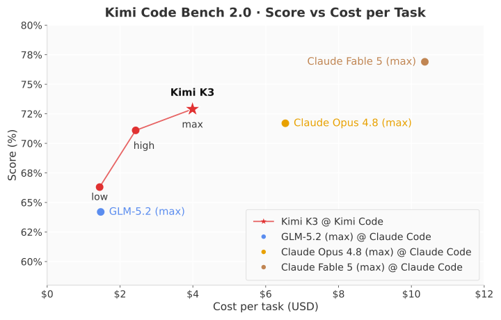
(a) Kimi Code Bench 2.0
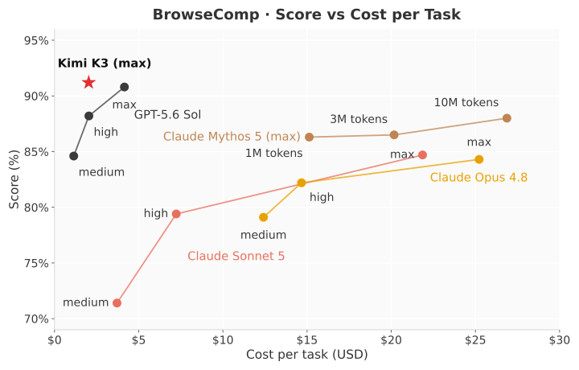
(b) BrowseComp
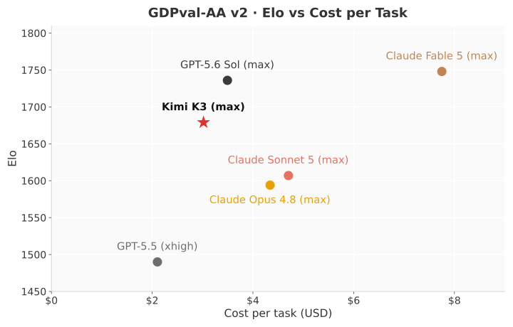
(c) GDPval-AA v2
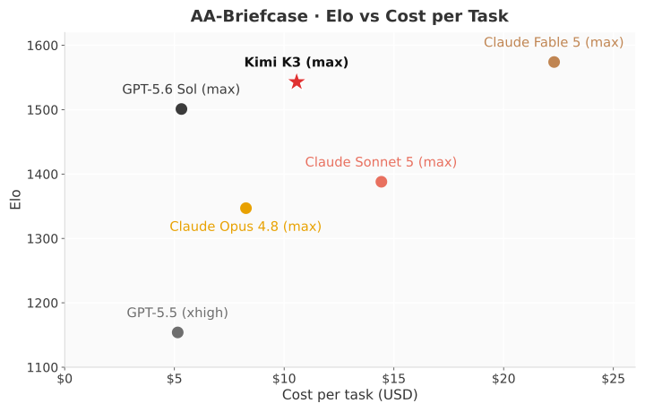
(d) AA-Briefcase
总体而言，Kimi K3 在全部四套任务集中都位于或接近成本效率前沿，尤其是相对 Claude Fable 5，它以较小比例的成本实现了接近最高水平的得分。
7 案例研究
本节介绍具有代表性的案例，展示 Kimi K3 在多种技术任务上的能力。
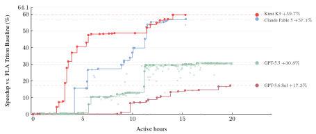
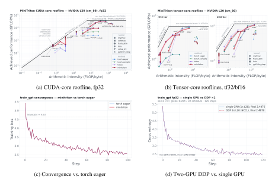
GPU 内核优化
我们测试了模型优化 GPU 内核的能力。各模型独立运行于配置完全相同的沙箱中，每个任务最多有 24 小时用于性能剖析、重写和基准测试。评估在 NVIDIA Hopper GPU 和另一厂商的 GPGPU 上，覆盖四个代表性内核：AttnRes、DeepSeek 稀疏注意力（DSA）、KDA，以及头维度为 512 的 MLA。 Kimi K3 大幅改善了全部四个内核的性能，将 AttnRes 延迟从 283.6 ms 降到 114.4 ms，分别将 DSA 和 KDA 的运行时间缩短 55.1% 和 73.6%，并在 MLA 上达到超过峰值一半的 TFLOPS。 在这些任务中，Kimi K3 达到了与 Claude Fable 5 [15]（使用回退机制）相当的表现，并显著超过 Claude Opus 4.8 [16]、GPT-5.6 Sol [39] 和 GPT-5.5 [38]。 图 14 比较了各模型在 AttnRes 上的优化轨迹。 除基准测试外，在开发后期，一个早期的 Kimi K3 检查点就已承担了我们大部分内核优化工作。
GPU 编译器开发
Kimi K3 开发了 MiniTriton55 5 https://github.com/MoonshotAI/minitriton，这是一个紧凑的类 Triton [123] 编译器，具备自定义的分块级 Python 前端与布局系统、轻量级的线程束级 MLIR [64] 注解和优化层，以及并行线程执行（PTX）代码生成流水线。围绕该编译器构建了一个具有类 PyTorch [89] 高层接口的双模式张量库，其即时执行路径与仅前向编译路径共享同一个 DSL 编译器和运行时。该库还提供反向模式自动微分、神经网络模块、基于 NCCL [82] 的分布式训练原语，以及稀疏和可视化原语。 在 NVIDIA L20 上，MiniTriton 在核心基准套件上的几何平均表现超过 PyTorch eager [89] 和 torch.compile [4]。其从零构建的张量核心矩阵乘法路径在最大形状下接近 cuBLAS [21]，达到实测机器屋顶线的大约 90%；其 DSL 层级的 KDA [57] 预填充内核则明显优于匹配设置下的 Triton 参考实现。MiniTriton 还能够端到端训练 GPT 模型，其损失曲线紧密跟随 PyTorch 参考实现；以 fp64 参考值衡量时，全模型梯度与 torch autograd 的差异不超过 torch 自身的 fp32 舍入误差（）。这些结果共同表明，Kimi K3 能够构建连贯的端到端编译器，涵盖从 DSL 前端、IR 优化过程，到 PTX 代码生成与 CUDA 运行时的完整链条，而不仅是一组彼此孤立的内核（图 15）。
芯片设计
作为早期概念验证，Kimi K3 为采用同类架构的 nano 模型设计了一个推理芯片原型：混合 KDA 与 NoPE-MLA 注意力、块大小为二的分块 AttnRes，以及带一个共享专家、基于 sigmoid 的 MoE 路由，并采用分组 INT4 权重量化（组大小为 128）。在一次通过 Kimi Code 进行的 48 小时自主运行中，Kimi K3 使用开源 EDA 工具与 Nangate45 标准单元库 [80]，完成了芯片的构建、优化和验证。在 4 mm2 的分析面积预算内，该设计在 100 MHz 下完成时序收敛，并实现了 RTL 仿真中超过 8,700 tokens/s 的解码吞吐量，集成了 1.46M 个标准单元、0.277 MiB SRAM，以及融合反量化的 INT4 MAC 阵列。 RTL 代码已发布在 GitHub66 6 https://github.com/MoonshotAI/nano-kpu。
面向研究的编程
为复现计算天体物理中的 I–Love–Q 普适关系，Kimi K3 阅读了超过 20 篇论文并交叉验证其结果，实现了完整的数值计算流水线，评估了超过 300 个状态方程，发现了已发表公式中的不一致，编写了超过 3,000 行 Python，并生成了交互式 HTML 仪表盘；整个过程约两小时，而有经验的研究者通常需要一到两周。
知识工作
在 Kimi Work 中，Kimi K3 制作了一个交互式研究网站，覆盖 AI ASIC 行业的 42 年发展史。模型进行了超过 120 轮迭代改进，通过超过 2,800 次网页搜索与超过 1,100 次终端查询，利用了由 87 份季度报告和 99 份原始 PDF（超过 11,000 页）构成的资料库。 在另一个案例中，Kimi K3 使用超过 20 个并发子智能体，分析了 GWTC-5 中的 391 次引力波事件，生成了七幅科学可视化图、两张汇总表，以及对十余篇论文的文献综合分析。
视频编辑与动态设计
凭借原生多模态架构，Kimi K3 制作了一部以 3Blue1Brown 风格动态图形介绍自身架构的视频，并从 56 段源素材中剪辑了预告片。过程涉及片段选择、动作匹配剪切、帧级精准节拍同步、音频处理，以及多轮修订。制作同等信息密度的短视频，有经验的剪辑师通常需要一到两天。
8 结论
我们提出 Kimi K3，一个拥有 2.8 万亿参数、具备原生视觉能力和百万词元上下文窗口的开放混合专家模型，基于 Kimi Delta 注意力和注意力残差构建。 作为全球首个开放的 3T 级模型，Kimi K3 在长程编程、智能体、知识、推理和视觉任务上达到前沿水平。 虽然与最强大的专有模型仍存在差距，Kimi K3 确立了人人可及的开放智能新前沿。我们希望它能够支持更广泛社区的研究、部署与创新。
参考文献
- [1] (2026)AA-briefcase: agentic knowledge work benchmark(Website) Artificial Analysis. External Links: Link Cited by: 3rd item.
- [2] (2020) Firecracker: lightweight virtualization for serverless applications. In 17th USENIX Symposium on Networked Systems Design and Implementation (NSDI), pp. 419–434. Cited by: 1st item.
- [3] (2026)Agents’ Last Exam(Website) UC Berkeley RDI. External Links: Link Cited by: 3rd item, §6.1.3.
- [4] (2024) PyTorch 2: faster machine learning through dynamic python bytecode transformation and graph compilation. In Proceedings of the 29th ACM International Conference on Architectural Support for Programming Languages and Operating Systems (ASPLOS), External Links: Document Cited by: §7.
- [5] (2025-02-24) Claude’s extended thinking. Note: https://www.anthropic.com/research/visible-extended-thinkingAccessed: 2026-07-23 Cited by: §1.
- [6] (2025-05-22) Introducing claude 4. Note: https://www.anthropic.com/news/claude-4Accessed: 2026-07-23 Cited by: §1.
- [7] (2026)Artificial analysis long context reasoning (AA-LCR)(Website) Artificial Analysis. External Links: Link Cited by: 1st item.
- [8] (2026)Artificial analysis(Website) Artificial Analysis. External Links: Link Cited by: 1st item, 2nd item, 3rd item, §6.1.3, §6.3, §6.4.
- [9] (2014) Neural machine translation by jointly learning to align and translate. External Links: Link, 1409.0473 Cited by: §2.2.
- [10] (2026) MCP-atlas: a large-scale benchmark for tool-use competency with real mcp servers. External Links: 2602.00933 Cited by: 3rd item.
- [11] (2026)Better moe model inference with warp decode(Website) Cursor. External Links: Link Cited by: §5.4.2.
- [12] (2026) BabyVision: visual reasoning beyond language. External Links: Link, 2601.06521 Cited by: 4th item.
- [13] (2026)FlashKDA: flash kimi delta attention(Website) External Links: Link Cited by: §5.1.1.
- [14] (2026)Claude Code(Website) Anthropic. External Links: Link Cited by: §4.2.1, §6.1.3.
- [15] (2026)Claude Fable 5(Website) Anthropic. External Links: Link Cited by: §6.1.2, §7.
- [16] (2026)Claude Opus 4.8(Website) Anthropic. External Links: Link Cited by: §6.1.2, §7.
- [17] (2026)Claude Sonnet 5(Website) Anthropic. External Links: Link Cited by: §6.4.
- [18] (2026)Claude Sonnet 5(Website) Anthropic. External Links: Link Cited by: §6.4.
- [19] (2026)Codex(Website) OpenAI. External Links: Link Cited by: §4.2.1, §6.1.3.
- [20] (2026)CorpFin v2(Website) Vals AI. External Links: Link Cited by: 3rd item.
- [21] (2026)cuBLAS(Website) NVIDIA. External Links: Link Cited by: §7.
- [22] (2024) DeepSeekMoE: towards ultimate expert specialization in mixture-of-experts language models. External Links: Link, 2401.06066 Cited by: §2.3.
- [23] (2026-06) ReplaySSM: cache ssm inputs, not state. Note: https://tridao.me/blog/2026/replayssm/ Cited by: §5.4.2.
- [24] (2024) Transformers are ssms: generalized models and efficient algorithms through structured state space duality. CoRR abs/2405.21060. External Links: Link, Document, 2405.21060 Cited by: §2.1.1.
- [25] (2017) Language modeling with gated convolutional networks. In Proceedings of the 34th International Conference on Machine Learning, Proceedings of Machine Learning Research, Vol. 70, pp. 933–941. External Links: Link Cited by: 图 4, §2.3.2.
- [26] (2024) Griffin: mixing gated linear recurrences with local attention for efficient language models. External Links: Link, 2402.19427 Cited by: §2.1.1.
- [27] (2024) DeepSeek-v3 technical report. External Links: Link, 2412.19437 Cited by: Appendix C, §2.3.3, §2.3.3, §5.2.2.
- [28] (2024) DeepSeek-v2: a strong, economical, and efficient mixture-of-experts language model. External Links: Link, 2405.04434 Cited by: §2.1.2.
- [29] (2026) DeepSeek-v4: towards highly efficient million-token context intelligence. arXiv preprint arXiv:2606.19348. Cited by: §1, §1, §4.1.3.
- [30] (2026)DeepSWE benchmark(Website) Datacurve. External Links: Link Cited by: 2nd item.
- [31] (2026) LatentMoE: toward optimal accuracy per flop and parameter in mixture of experts. External Links: Link, 2601.18089 Cited by: §2.3.
- [32] (2022) Switch transformers: scaling to trillion parameter models with simple and efficient sparsity. Journal of Machine Learning Research 23 (120), pp. 1–39. Cited by: §2.3.3.
- [33] (2025-07) Optimus: accelerating Large-Scale Multi-Modal LLM training by bubble exploitation. In 2025 USENIX Annual Technical Conference (USENIX ATC 25), Boston, MA, pp. 161–177. External Links: ISBN 978-1-939133-48-9, Link Cited by: §5.2.3.
- [34] (2026)Finance Agent v2(Website) Vals AI. External Links: Link Cited by: 3rd item.
- [35] (2026)FrontierSWE(Website) External Links: Link Cited by: 2nd item.
- [36] (2024) Video-mme: the first-ever comprehensive evaluation benchmark of multi-modal llms in video analysis. External Links: Link, 2405.21075 Cited by: 4th item.
- [37] (2026)GLM-5.2(Website) Z.ai. External Links: Link Cited by: §6.1.2.
- [38] (2026)GPT-5.5(Website) OpenAI. External Links: Link Cited by: §6.1.2, §7.
- [39] (2026)GPT-5.6 Sol(Website) OpenAI. External Links: Link Cited by: §6.1.2, §6.4, §7.
- [40] (2025) DeepSeek-r1 incentivizes reasoning in llms through reinforcement learning. Nature 645 (8081), pp. 633–638. External Links: Link, Document, ISSN 1476-4687 Cited by: §1.
- [41] (2025) SonicMoE: accelerating moe with io and tile-aware optimizations. External Links: Link, 2512.14080 Cited by: §5.2.2.
- [42] (2026)Harvey LAB: legal agent benchmark(Website) Harvey. External Links: Link Cited by: 3rd item.
- [43] (2015) Deep residual learning for image recognition. External Links: Link, 1512.03385 Cited by: §2.2.
- [44] (2026)Hermes agent(Website) Nous Research. External Links: Link Cited by: §4.2.1.
- [45] (2022) Training compute-optimal large language models. External Links: Link, 2203.15556 Cited by: §1.
- [46] (2024) MiniCPM: unveiling the potential of small language models with scalable training strategies. External Links: 2404.06395 Cited by: §3.2.
- [47] (2026) Step 3.5 flash: open frontier-level intelligence with 11b active parameters. arXiv preprint arXiv:2602.10604. Cited by: §2.3.3.
- [48] (2019) Gpipe: efficient training of giant neural networks using pipeline parallelism. Advances in neural information processing systems 32. Cited by: §5.2.
- [49] (2018) Quantization and training of neural networks for efficient integer-arithmetic-only inference. In Proceedings of the IEEE Conference on Computer Vision and Pattern Recognition (CVPR), pp. 2704–2713. Cited by: §4.1.4.
- [50] (2023) DeepSpeed ulysses: system optimizations for enabling training of extreme long sequence transformer models. External Links: Link, 2309.14509 Cited by: §5.2.
- [51] (2026) PowLU: an activation function for stable pre-training of LLMs. External Links: Link, 2605.25704 Cited by: §2.3.2.
- [52] (2026-07-24)JobBench: aligning agent work with human will(Website) External Links: Link Cited by: §6.1.3.
- [53] (2024)Muon: an optimizer for hidden layers in neural networks(Website) External Links: Link Cited by: §2.5.
- [54] (2020) Scaling laws for neural language models. External Links: Link, 2001.08361 Cited by: §1.
- [55] (2020) Transformers are RNNs: fast autoregressive transformers with linear attention. In Proceedings of ICML, H. D. III and A. Singh (Eds.), pp. 5156–5165. External Links: Link Cited by: §2.2.
- [56] (2026)Kimi CLI(Website) Moonshot AI. External Links: Link Cited by: §4.2.1, §6.1.3.
- [57] (2025) Kimi linear: an expressive, efficient attention architecture. External Links: 2510.26692 Cited by: Kimi K3：开放的前沿智能, §1, §2.1.1, §2.1.1, §2.1.1, §2.1.1, §2.1.1, §2.1.1, §2.1.2, §2.1, §2, §7.
- [58] (2025) Kimi k2: open agentic intelligence. External Links: 2507.20534 Cited by: Kimi K3：开放的前沿智能, §1, §2.1.2, §3.1, §3.1, §4.1.1, §4.1.2, §5.2.2, §5.3.1.
- [59] (2025) Kimi-vl technical report. arXiv preprint arXiv:2504.07491. Cited by: §2.4.
- [60] (2026) Attention residuals. Note: Preprint Cited by: Kimi K3：开放的前沿智能, §1, §2.2, §2.2, §2, §5.2.2, §5.4.2.
- [61] (2026) Kimi k2.5: visual agentic intelligence. arXiv preprint arXiv:2602.02276. Cited by: §1, §2.1.2, §2.4, §3.1, §3.1, §4.1.1, §4.1.2, §4.1.2, §4.1.2, §5.2.3, 6th item.
- [62] (2026-07-16)Kimi k3: open frontier intelligence(Website) Moonshot AI. External Links: Link Cited by: Appendix B.
- [63] (2026) PerceptionBench: evaluating atomic visual perception in multimodal large language models. External Links: 2607.24957, Link Cited by: 4th item.
- [64] (2021) MLIR: scaling compiler infrastructure for domain specific computation. In 2021 IEEE/ACM International Symposium on Code Generation and Optimization (CGO), pp. 2–14. External Links: Document Cited by: §7.
- [65] (2026)Legal research bench(Website) Vals AI. External Links: Link Cited by: 3rd item.
- [66] (2020) Gshard: scaling giant models with conditional computation and automatic sharding. arXiv preprint arXiv:2006.16668. Cited by: §5.2.
- [67] (2021) BASE layers: simplifying training of large, sparse models. In Proceedings of ICML, Cited by: Appendix C.
- [68] (2020) DADI: block-level image service for agile and elastic application deployment. In 2020 USENIX Annual Technical Conference (USENIX ATC), pp. 727–740. Cited by: 3rd item.
- [69] (2025) The tool decathlon: benchmarking language agents for diverse, realistic, and long-horizon task execution. Note: ICLR 2026 External Links: 2510.25726 Cited by: 3rd item.
- [70] (2026) JobBench: aligning agent work with human will. External Links: 2605.26329 Cited by: 3rd item.
- [71] (2025) EAGLE-3: scaling up inference acceleration of large language models via training-time test. External Links: Link, 2503.01840 Cited by: §4.1.4.
- [72] (2023) Ring attention with blockwise transformers for near-infinite context. External Links: Link, 2310.01889 Cited by: §5.1.2.
- [73] (2025) Muon is scalable for llm training. External Links: Link, 2502.16982 Cited by: §5.2.2.
- [74] (2026)LMArena leaderboard(Website) LMArena. External Links: Link Cited by: §6.3.
- [75] (2025) On-policy distillation. Note: Thinking Machines Lab: Connectionism External Links: Link Cited by: §1, §4.1.3.
- [76] (2026) MLS-Bench: a holistic and rigorous assessment of AI systems on building better AI. External Links: 2605.08678 Cited by: 2nd item.
- [77] (2018) Parallelizing linear recurrent neural nets over sequence length. In Proceedings of ICLR, External Links: Link Cited by: §5.1.2.
- [78] (2026) Terminal-bench: benchmarking agents on hard, realistic tasks in command line interfaces. arXiv preprint arXiv:2601.11868. Cited by: 2nd item.
- [79] (2018) Online normalizer calculation for softmax. External Links: Link, 1805.02867 Cited by: §2.2, §5.4.2.
- [80] (2010) Nangate 45nm open cell library. Note: https://si2.org/open-cell-library/Version PDKv1_3_v2010_12. Donated to and distributed by the Silicon Integration Initiative (Si2) Cited by: §7.
- [81] (2021) Efficient large-scale language model training on gpu clusters using megatron-lm. In Proceedings of the international conference for high performance computing, networking, storage and analysis, pp. 1–15. Cited by: §5.2.
- [82] (2026)NCCL: the NVIDIA collective communications library(Website) NVIDIA. External Links: Link Cited by: §7.
- [83] (2025)OpenAI harmony response format(Website) OpenAI. External Links: Link Cited by: Appendix F.
- [84] (2024) Learning to reason with LLMs. Note: https://openai.com/index/learning-to-reason-with-llms/Accessed: 2026-07-23 Cited by: §1.
- [85] (2025-04) Introducing openai o3 and o4-mini. External Links: Link Cited by: §1.
- [86] (2026)OpenClaw(Website) OpenClaw. External Links: Link Cited by: §4.2.1.
- [87] (2026) OfficeQA pro: an enterprise benchmark for end-to-end grounded reasoning. External Links: 2603.08655 Cited by: 3rd item.
- [88] (2025) OmniDocBench: benchmarking diverse pdf document parsing with comprehensive annotations. External Links: Link, 2412.07626 Cited by: 4th item.
- [89] (2019) PyTorch: an imperative style, high-performance deep learning library. External Links: 1912.01703 Cited by: §7.
- [90] (2025) GDPval: evaluating AI model performance on real-world economically valuable tasks. External Links: Link, 2510.04374 Cited by: 3rd item.
- [91] (2025) RWKV-7 "goose" with expressive dynamic state evolution. External Links: 2503.14456 Cited by: §2.1.1.
- [92] (2023) Yarn: efficient context window extension of large language models. arXiv preprint arXiv:2309.00071. Cited by: §2.1.2, §3.4.
- [93] (2025) Humanity’s last exam. External Links: Link, 2501.14249 Cited by: 1st item.
- [94] (2026)PostTrainBench(Website) External Links: Link Cited by: 2nd item.
- [95] (2026)ProgramBench(Website) Vals AI. External Links: Link Cited by: 2nd item.
- [96] (2024) Mooncake: a KVCache-centric disaggregated architecture for LLM serving. External Links: 2407.00079 Cited by: §5.2.2.
- [97] (2024) HGRN2: gated linear RNNs with state expansion. External Links: Link, 2404.07904 Cited by: §2.1.1.
- [98] (2026) Why low-precision transformer training fails: an analysis on flash attention. In International Conference on Learning Representations (ICLR), External Links: 2510.04212 Cited by: §2.1.2.
- [99] (2025) Gated attention for large language models: non-linearity, sparsity, and attention-sink-free. External Links: 2505.06708 Cited by: §2.1.1, §2.1.2.
- [100] (2020) Zero: memory optimizations toward training trillion parameter models. In SC20: International Conference for High Performance Computing, Networking, Storage and Analysis, pp. 1–16. Cited by: §5.2.
- [101] (2024) Gpqa: a graduate-level google-proof q&a benchmark. In First Conference on Language Modeling, Cited by: 1st item.
- [102] (2025) ZeroBench: an impossible visual benchmark for contemporary large multimodal models. External Links: Link, 2502.09696 Cited by: 4th item.
- [103] (2023) Microscaling data formats for deep learning. arXiv preprint arXiv:2310.10537. External Links: 2310.10537 Cited by: §4.1.4.
- [104] (2026) LK losses: direct acceptance rate optimization for speculative decoding. External Links: Link, 2602.23881 Cited by: §4.1.4.
- [105] (2021) Linear transformers are secretly fast weight programmers. In Proceedings of ICML, M. Meila and T. Zhang (Eds.), pp. 9355–9366. External Links: Link Cited by: §2.1.1.
- [106] (2026) ResearchRubrics: a benchmark of prompts and rubrics for evaluating deep research agents. In The Fourteenth International Conference on Learning Representations, External Links: Link Cited by: 3rd item.
- [107] (2020) GLU variants improve transformer. External Links: Link, 2002.05202 Cited by: 图 4, §2.3.2.
- [108] (2026) AutomationBench. External Links: 2604.18934 Cited by: 3rd item.
- [109] (2026) SaaS-bench: can computer-use agents leverage real-world saas to solve professional workflows?. External Links: Link, 2605.15777 Cited by: 3rd item.
- [110] (2025) ThunderKittens: simple, fast, and adorable kernels. In The Thirteenth International Conference on Learning Representations, External Links: Link Cited by: §4.2.4.
- [111] (2025-11)Muon optimizer guide: quick start and key details(Website) Note: Blog post (in Chinese) External Links: Link Cited by: §2.5.
- [112] (2026-02)Travels in MoE: 6. Promoting load balance via optimal assignment(Website) Note: Blog post (in Chinese) External Links: Link Cited by: Appendix C, §2.3.3.
- [113] (2026) Expert threshold routing for autoregressive language modeling with dynamic computation allocation and load balancing. External Links: 2603.11535 Cited by: Appendix C, §2.3.3.
- [114] (2025) LASP-2: rethinking sequence parallelism for linear attention and its hybrid. External Links: Link, 2502.07563 Cited by: §5.1.2.
- [115] (2024) Linear attention sequence parallelism. External Links: Link, 2404.02882 Cited by: §5.1.2.
- [116] (2026) Agents’ last exam. External Links: 2606.05405, Link Cited by: 3rd item.
- [117] (2025) Binary-integer-programming based algorithm for expert load balancing in mixture-of-experts models. External Links: 2502.15451 Cited by: Appendix C, Appendix C.
- [118] (2026)SWE Marathon(Website) External Links: Link Cited by: 2nd item.
- [119] (2025) Kimi k1.5: scaling reinforcement learning with llms. External Links: Link, 2501.12599 Cited by: §1, §4.1.2, §5.3.1.
- [120] (2026-07-24)The tool decathlon: benchmarking language agents for diverse, realistic, and long-horizon task execution(Website) External Links: Link Cited by: §6.1.3.
- [121] (2026-07-15) Inkling: our open-weights model. Note: https://thinkingmachines.ai/news/introducing-inkling/Accessed: 2026-07-23 Cited by: §1.
- [122] (2024) SciCode: a research coding benchmark curated by scientists. External Links: Link, 2407.13168 Cited by: 2nd item.
- [123] (2019) Triton: an intermediate language and compiler for tiled neural network computations. In Proceedings of the 3rd ACM SIGPLAN International Workshop on Machine Learning and Programming Languages (MAPL), Cited by: §7.
- [124] (2026-07) Preliminary assessment of Kimi K3’s cyber capabilities. Note: https://www.aisi.gov.uk/blog/preliminary-assessment-of-kimi-k3s-cyber-capabilities Cited by: §6.2.2.
- [125] (2026)Vals AI(Website) Vals AI. External Links: Link Cited by: §6.1.3, §6.3.
- [126] (2017) Attention is all you need. In Advances in NeurIPS, I. Guyon, U. V. Luxburg, S. Bengio, H. Wallach, R. Fergus, S. Vishwanathan, and R. Garnett (Eds.), pp. . External Links: Link Cited by: §2.2.
- [127] (2025) DeepSearchQA: bridging the comprehensiveness gap for deep research agents. Google DeepMind, Google Search, Kaggle, and Google Research. External Links: Link Cited by: 3rd item.
- [128] (2026) APEX-Agents. External Links: 2601.14242 Cited by: 3rd item.
- [129] (2024) Measuring multimodal mathematical reasoning with math-vision dataset. In Advances in NeurIPS, A. Globerson, L. Mackey, D. Belgrave, A. Fan, U. Paquet, J. Tomczak, and C. Zhang (Eds.), Vol. 37, pp. 95095–95169. External Links: Link, Document Cited by: 4th item.
- [130] (2025) TileLang: a composable tiled programming model for ai systems. arXiv preprint arXiv:2504.17577. External Links: Link Cited by: §4.2.4.
- [131] (2024) CharXiv: charting gaps in realistic chart understanding in multimodal llms. External Links: Link, 2406.18521 Cited by: 4th item.
- [132] (2025) BrowseComp: a simple yet challenging benchmark for browsing agents. External Links: Link, 2504.12516 Cited by: 3rd item.
- [133] (2026) UltraEP: unleash moe training and inference on rack-scale nodes with near-optimal load balancing. External Links: Link, 2606.04101 Cited by: §5.2.1.
- [134] (2025) MCPMark: a benchmark for stress-testing realistic and comprehensive mcp use. arXiv preprint arXiv:2509.24002. Cited by: 3rd item.
- [135] (2026) MiMo-v2-flash technical report. arXiv preprint arXiv:2601.02780. Cited by: §1, §4.1.3.
- [136] (2026) MiMo-v2.5-pro. Note: https://huggingface.co/collections/XiaomiMiMo/mimo-v25 Cited by: §1.
- [137] (2025-07) Introducing osworld-verified. xlang.ai. External Links: Link Cited by: 3rd item.
- [138] (2026) Scalable training of mixture-of-experts models with megatron core. External Links: Link, 2603.07685 Cited by: §5.2.1.
- [139] (2025) Gated delta networks: improving mamba2 with delta rule. In Proceedings of ICLR, External Links: Link Cited by: §2.1.1, §2.1.1, §2.1.1.
- [140] (2024) Gated linear attention transformers with hardware-efficient training. In Proceedings of ICML, Cited by: §2.1.1.
- [141] (2024) Parallelizing linear transformers with the delta rule over sequence length. In Proceedings of NeurIPS, Cited by: §2.1.1.
- [142] FLA: a triton-based library for hardware-efficient implementations of linear attention mechanism External Links: Link Cited by: §4.2.4, §5.1.1, §5.1.1, §5.1.2.
- [143] (2025)Context parallelism for deltanet(Website) External Links: Link Cited by: §5.1.1, footnote 2.
- [144] (2026) OSWorld2.0: benchmarking computer use agents on long-horizon real-world tasks. External Links: Link, 2606.29537 Cited by: 3rd item.
- [145] (2024) MMMU-pro: a more robust multi-discipline multimodal understanding benchmark. External Links: Link, 2409.02813 Cited by: 4th item.
- [146] (2026) GLM-5: from vibe coding to agentic engineering. External Links: Link, 2602.15763 Cited by: §1, §2.5, §5.2.2, §5.2.
- [147] (2019) Root mean square layer normalization. Advances in NeurIPS 32. Cited by: §2.1.1, §2.2, §2.3.1.
- [148] (2025) DeepEP: an efficient expert-parallel communication library. GitHub. Note: https://github.com/deepseek-ai/DeepEP Cited by: §5.2.1.
- [149] (2025-06) MMVU: measuring expert-level multi-discipline video understanding. In Proceedings of the IEEE/CVF Conference on Computer Vision and Pattern Recognition (CVPR), pp. 8475–8489. Cited by: 4th item.
- [150] (2026) WorldVQA: measuring atomic world knowledge in multimodal large language models. External Links: Link, 2602.02537 Cited by: 4th item.
- [151] (2026) SpreadsheetBench 2: evaluating agents on end-to-end business spreadsheet workflows. External Links: 2606.29955 Cited by: 3rd item.
- [152] (2026)-Banking(Website) Sierra. External Links: Link Cited by: 3rd item.
liography[title=参考文献]
Appendix A 贡献者
贡献者名单按姓氏的字母顺序排列。
Tongtong Bai
Yifan Bai
Yiping Bao
M. C.
Jianfeng Cai
Xinyuan Cai
Peizhou Cao
Yuxuan Cao
Ziwei Chai
Y. Charles
H.S. Che
Guanduo Chen
Guangyu Chen
Guanzheng Chen
Huarong Chen
Jia Chen
Jianlong Chen
Jun Chen
Kexin Chen
Peng Chen
Ruijue Chen
Wentao Chen
Xin Chen
Yang Chen
Yanru Chen
Yifei Chen
Yingjiang Chen
Yuankun Chen
Yujie Chen
Yutian Chen
Zhirong Chen
Dazhi Cheng
Yean Cheng
Jialei Cui
Jingbing Cui
Anqi Dai
Jiaqi Deng
Hao Ding
Rui Ding
Shaofeng Ding
Mengfan Dong
Mengnan Dong
Yuhao Dong
Yuxin Dong
Ang’ang Du
Chenzhuang Du
Dikang Du
Jusen Du
Yulun Du
Yu Fan
Jing Feng
Qiulin Feng
Yichen Feng
Kelin Fu
Qiang Fu
Fuxuan Gao
Hongcheng Gao
Jingyue Gao
Tong Gao
Weijia Gao
Shangyi Geng
Jie Gong
Linghu Gong
Shengao Gong
Xiaochen Gong
Qizheng Gu
Yicheng Gu
Shuhao Guan
Haiqing Guo
Shiqi Guo
Xiang Guo
Zhengyan Guo
Beixi Hao
Wenxin Hao
Xiaoru Hao
Dailan He
Haotian He
Lehan He
Qi He
Weiran He
Xinran He
Xinyi He
Yibo He
Yunjia He
Chao Hong
Tiange Hong
Hao Hu
Jiaxi Hu
Ruikun Hu
Weiming Hu
Yangyang Hu
Zhenxing Hu
Liang Hua
Jinbin Huang
Ke Huang
Ruiyuan Huang
Siying Huang
Weixiao Huang
Yan Huang
Zhengjie Huang
Zhiqi Huang
Yulong Hui
Chaobo Jia
Yutong Jiang
Zhejun Jiang
Zuoyou Jiang
Wenyi Jin
Xinyi Jin
Yu Jing
Huanjun Kong
Guokun Lai
Aidi Li
Cheng Li
Chengyuan Li
Cong Li
Fang Li
Guanyu Li
Haoyang Li
Jia Li
Junxiong Li
Lei Li
Letian Li
Lincan Li
Weihong Li
Wentao Li
Xintong Li
Yang Li
Yishen Li
Yiwei Li
Yuxiao Li
Zhaowei Li
Zhaoxi Li
Zheming Li
Zhengxiao Li
Zhiyuan Li
Jiawei Lin
Xiaohan Lin
Yibo Lin
Zichao Lin
Ziyan Lin
Bill Liu
Boxiao Liu
Chuan Liu
Liang Liu
Shaowei Liu
Shudong Liu
Shuran Liu
Tianwei Liu
Weizhou Liu
Yangyang Liu
Yanming Liu
Yibo Liu
Yipeng Liu
Zhengying Liu
Zhiheng Liu
Enzhe Lu
Haoyu Lu
Linqiang Lu
Tingzhan Lu
Zhiyuan Lu
Aotian Luo
G. Luo
Junyu Luo
Yifan Luo
B. Lyu
Wenzhou Lyu
Shaoguang Mao
Yuan Mei
Xin Men
Minqing Ni
Yixuan Niu
Siyuan Pan
Shujun Peng
Zhangyang Qi
Ruoyu Qin
ZeChao Qin
Zeyu Qin
Haiquan Qiu
Jianxin Qiu
Jiezhong Qiu
Bowen Qu
Yuhao Qu
Zeyu Shang
Youbo Shao
Han Shen
Jincheng Shi
Juanfeng Shi
Lidong Shi
Shengyuan Shi
Wingchun Siu
Pengwei Song
Xiaoxi Song
Jianlin Su
Yunfeng Su
Zhaochen Su
Lin Sui
Jingsong Sun
Junyao Sun
Shaoning Sun
Shuzhe Sun
Tongyu Sun
Yujun Sun
Yunpeng Tai
Chuning Tang
Heyi Tang
Sirui Tang
Zecheng Tang
Chaoran Tian
Rongpeng Tian
Yu Tian
Wei Tu
Chensi Wang
Chuang Wang
Chunjie Wang
Dinglu Wang
Feng Wang
Hailong Wang
Haiming Wang
Hao Wang
Hao Wang
Huaqing Wang
Hui Wang
Jiayi Wang
Jinglong Wang
Jinhong Wang
Jiuzheng Wang
Linian Wang
Shaobo Wang
Shenzhi Wang
Shuyi Wang
Si Wang
Siyuan Wang
Tianfu Wang
Wenjue Wang
Xingran Wang
Xinmei Wang
Xinyuan Wang
Xusheng Wang
Yalin Wang
Yangkun Wang
Yao Wang
Yaoyu Wang
Yejie Wang
Yiqin Wang
Yucheng Wang
Yuzhi Wang
Zhaoji Wang
Zhaowei Wang
Zhengtao Wang
Zhenhao Wang
Zhongsheng Wang
Zifan Wang
Chu Wei
Ming Wei
Shouxin Wei
Zichen Wen
Fan Wu
Haoning Wu
Rucong Wu
Wenhao Wu
Xiaoxue Wu
Yingcong Wu
Yongqi Wu
Yuxin Wu
Zijian Wu
Xinglang Xian
Chenxuan Xiang
Yuye Xiang
Bocheng Xiao
Chenjun Xiao
Xin Xiao
Jin Xie
Xiaotong Xie
Yifeng Xie
Zhe Xie
Bowei Xing
Yiming Xiong
Baosheng Xu
Boyu Xu
Jiale Xu
Jianfan Xu
Jing Xu
Jinjing Xu
L.H. Xu
Qingtao Xu
Shuyao Xu
Suting Xu
Tiantian Xu
Tianxiang Xu
Weixin Xu
Xinran Xu
Yangchuan Xu
Ye Xu
Yueni Xu
Ziyao Xu
Haonan Xue
Junjie Yan
Yaoyao Yan
Fan Yang
Guangyao Yang
Hao Yang
Junwei Yang
Ruoyu Yang
Wenjie Yang
Xiaofei Yang
Xinyu Yang
Yi Yang
Yiling Yang
Ying Yang
Yuchen Yang
Zhen Yang
Zhilin Yang
Zian Yang
Zuhao Yang
Haotian Yao
Dan Ye
Haoran Ye
Wenjie Ye
Zhanbo Ye
Bohong Yin
Haoxiang Yin
Xietong Yin
Chengzhen Yu
Haozhen Yu
Longhui Yu
Shengnan Yu
Shuying Yu
Tianxiang Yu
Enming Yuan
Mengjie Yuan
Tongtian Yue
Wei Yue
Yang Yue
Dunyuan Zha
Haobing Zhan
B.H. Zhang
Dehao Zhang
Fei Zhang
Hao Zhang
Haoyuan Zhang
Huanyu Zhang
Jiapei Zhang
Jiaxuan Zhang
Jin Zhang
Kaiyi Zhang
Miaozhen Zhang
Puqi Zhang
Qinglei Zhang
Rong Zhang
Rui Zhang
Shaoshuai Zhang
Shiyi Zhang
Xiaobin Zhang
Xiaoyun Zhang
Y. Zhang
Yangkun Zhang
Ye Zhang
Yichi Zhang
Yikun Zhang
Yizhi Zhang
Yongting Zhang
Yu Zhang
Yutao Zhang
Yutong Zhang
Zheng Zhang
Zijing Zhang
Bin Zhao
Chenguang Zhao
Feifan Zhao
Jinglun Zhao
Jinxiang Zhao
Shuai Zhao
Wenshuo Zhao
Xiangyu Zhao
Xuanle Zhao
Yikai Zhao
Zijia Zhao
Haozhi Zheng
Huabin Zheng
Ruihan Zheng
Shaojie Zheng
Tengyang Zheng
Haofeng Zhong
Lei Zhong
Longguang Zhong
M. Zhou
Qiankang Zhou
Runjie Zhou
Ruozhang Zhou
Xinyu Zhou
Yiqiao Zhou
Zaida Zhou
Jinguo Zhu
Liya Zhu
Xinhao Zhu
Yangjunfeng Zhu
Yuxuan Zhu
Zhen Zhu
Chen Zhuang
Weiyu Zhuang
Xinxing Zu
Kimi K3
Appendix B Sigmoid Tanh 单元 GLU 的细节
SiTU-GLU（§2.3.2）的设计目标，是在不舍弃 Swish 特有形状的前提下，约束 SwiGLU 的乘积：这一形状表现为原点附近近似线性的响应，以及趋于零的负向尾部。 图 4 展示了门控分支和上投影分支，以及二者完整的标量响应。
平滑地限制两个分支的幅度
SiTU 将 Swish 的线性因子限制为 ，同时保留 sigmoid 因子 [62]。 由于 sigmoid 已经使门控分支的负向响应趋于零，这一修改主要控制较大的正向激活，而不会移除负向尾部。 Kimi K3 在上投影分支中采用相同构造，即 ，防止任一分支主导乘积。
局部行为与极限行为
对于原点附近的标量 ，缩放后的 满足
| (18) |
因此，SiTU-GLU 在原点附近与 SwiGLU 的一阶行为一致。 当 时，它还逐点恢复为 SwiGLU。
有界输出
由于 且 ，每个输出坐标均满足
| (19) |
其中取 和 。 与对门控预激活进行硬截断不同，平滑上限在远离饱和边界的区域保留非零梯度；我们发现这带来了更好的训练表现。
Appendix C 分位数均衡的推导
本附录遵循 [112]，从最优均衡分配出发，推导 §2.3 中使用的分位数均衡（QB）更新；从分配角度研究专家负载均衡的思路可追溯至 BASE Layers [67] 和 BIP [117]。 令 收集 个词元在 个专家上的路由器得分，其中每个词元恰好选择 个专家， 表示词元 是否被分配给专家 。 得分最大的均衡分配要求每个专家恰好服务 个词元（假设该值为整数），其形式为
| (20) |
线性松弛与对偶
将 松弛为 ，会使式 20 成为一个线性规划；由二部图 -匹配多面体的标准整数性，其最优解为整数，因此这一松弛是精确的。 分别为词元侧和专家侧的等式约束引入自由乘子 和 ，松弛后的问题可写为如下极大—极小形式：
| (21) |
目标对 、 和 分别都是线性的，且可行集为凸集，因此极小极大定理允许交换优化顺序：
| (22) |
内层极大化可按各个元素分离： 对应 的情况， 对应 的情况；实际中相等情况的测度为零。 代入 ，得到凸对偶目标
| (23) |
精确坐标最小化
我们通过交替求解 （固定 ）以及固定前者、求解后者，最小化式 23；每个子问题都具有闭式精确解。 固定 时，问题在词元间解耦，对词元 求解
| (24) |
这一目标关于 是分段线性的，其斜率等于 减去超过 的差值 的数量；因此，恰有 个差值大于 时，目标取得最小值，即 可以取 中第 大与第 大元素之间的任意值。 按照约定，我们取第 大元素，等价于 分位数：
| (25) |
对称地，固定 时，专家 求解 ，其极小点是 中第 大的元素，也就是 分位数：
| (26) |
因此，两项更新分别是在词元轴和专家轴上求取同一分位数，这也是该方法名称的由来。 图 5 将专家侧更新展示为均衡各个专家差值分布中被接受的上尾部分；算法 1 概括了由此得到的交替求解器。
从分配到路由
与基于符号的无辅助损失更新的关系
式 26 背后的专家侧子问题具有如下（次）梯度：
| (27) |
即目标负载减去专家 的观测负载。 在考虑符号约定 后，对这一目标执行一次 SignSGD 步骤，就恢复了无辅助损失均衡 [27] 的固定步长符号更新：符号更新仅保留式 27 中负载误差的方向，而 QB 直接跳到同一对偶目标的精确坐标极小点。 这一视角解释了 QB 为何无需类似学习率的超参数，也解释了即使专家数量接近 ，它仍能在少数更新步骤内达到均衡。 QB 同样与 BIP [117] 相关，后者在不等式约束 和 下求解相同分配问题；由此对 和 引入的非负约束，会为两项更新添加 截断。这只能抑制被过多选择的专家，却无法促进被选择不足的专家，在我们的实验中显著减慢了达到均衡的速度。 最后，所得的固定 Top- 路由与专家特定阈值路由相关，但不同于 Expert Threshold 路由；后者维护 EMA 阈值，并允许每个词元选择可变数量的专家 [113]。
Appendix D 基于直方图的分位数估计
式 14 中的 QB 更新要求在整个训练步骤上求取分位数：对 个专家中的每一个，求差值 的 分位数，其中词元数量 对应分布在数据并行进程与梯度累积步骤上的数百万个词元。 在训练循环内部汇聚 个差值来精确计算分位数并不现实。 关键观察是，更新从不需要这些差值本身，只需要每个专家对应的差值分布，而直方图可以以固定成本概括该分布。 因此，Kimi K3 为每个专家维护分箱直方图，并从中读取分位数。 具体而言，我们为所需偏置 建立直方图，该偏置会使专家 恰好位于词元 的截断阈值处；对差值取负会反转其顺序，因此式 14 中的 QB 目标 ，恰好就是 的 分位数。
分箱范围
第一个问题是在什么区间内分箱；所需偏置在这里很有帮助，因为其范围受当前偏置本身约束。 路由器得分是 sigmoid 输出，因此 ；截断阈值 本身是某个专家 的加偏置得分 ，所以位于 中，其中 和 是当前偏置的最小值与最大值。 因此，每个 都落在 内。 我们将该区间划分为 个均匀分箱，实践中发现这已足够，并在每步重新计算范围，使箱宽 能随着偏置为纠正不均衡而扩展，持续适应其变化。
累积与恢复
性质
三项性质使这一估计器适合大规模使用。 首先，它足够准确：分箱边界处的累计计数是精确的，因此真实分位数及其估计值位于同一分箱内，误差以箱宽 为界；当 时，误差最多为几个 ，我们没有观察到可测量的残余负载不均衡。 其次，它开销低：唯一的通信是每层每步对 个值进行一次整数 all-reduce，与 无关。在我们的配置下，这一成本不到另一种直观方案的 ，后者需在每个微批次中通过进程组交换原始差值。 第三，它估计的是正确的量：因为计数可加，全局直方图严格不受词元如何划分到各进程或累积步骤的影响；估计值是汇总后全局批次的分位数，而不是各进程分位数的平均值，两者通常并不相同。作为进一步改进，跨步骤维护估计分位数的指数移动平均，可降低批次间的采样噪声，并进一步改善负载均衡。
Appendix E MoonEP 一般上界证明
令 表示在方案 下放置于进程 上的冗余专家数量。对于路由器输出 ，规划目标是最小化所有进程中冗余专家数量的最大值，即 。我们证明 始终成立（定理 1），且这一界基本是紧的：存在某些路由器输出，使得 （定理 2）。
定理 1 的证明（一般上界）
目标是证明 对任意路由器输出 都成立。关键引理是：存在方案 ，使每个 EP 进程接收完全相同数量的词元（），且每个进程的远程词元仅来自另一个 EP 进程。构造如下：初始时，各进程只持有本地词元，并据此被划分为负载不足或过载两类。我们反复选取一个负载不足的进程和一个过载进程，从过载进程迁移词元，使负载不足进程恰好填充至均衡值 ；过载进程可能仍然过载、恰好均衡，或转为负载不足，随后放回对应集合。重复此过程，直至所有进程完全均衡。每次填充使一个负载不足进程达到均衡，之后不再改变，因此过程最多经过 次填充便终止；同时，每个进程至多被填充一次，故其远程词元只来自单个进程，引理得证。因此，假设进程 的全部远程词元来自进程 ，这些词元至多属于进程 上的 个本地专家，于是 ，从而有
| (28) |
定理 2 的证明（上界的紧性）
构造路由器输出 如下：EP 进程 0 上的专家不接收任何词元，而其余 个进程上的全部专家均分所有词元。于是，全部 个词元被均匀分配给 个专家，每个专家接收 个词元。在任意方案 下，进程 0 必须接收 个词元，且它们全部来自远程；这些词元至少涉及 个不同专家。向上取整可知，进程 0 至少需要 个冗余专家，故 。反过来，使用定理 1 证明中的填充过程构造方案，并优先以专家为单位迁移词元，可以将每个进程的冗余专家数保持在该值以内，因此等号成立。由于 较大时有 ，定理 1 中的上界基本是紧的：不存在显著小于 的一般上界。
Appendix F 对话模板
Kimi K3 的对话模板围绕三个目标重新设计。第一个目标是可扩展性：新增能力应通过向后兼容的消息格式引入，而无需修订模板，使同一模板能够服务于整代模型。第二个目标是较低的对齐代价：模型应仅需少量监督数据即可学会该格式，从而支持一种训练流程——预训练模型经过轻量微调后便可直接进入强化学习。第三个目标是解码友好性：结构应支持简单的编码器、流式解析器和语法约束执行器。为此，模板采用 XTML（eXtensible Token Markup Language，可扩展词元标记语言），这是一种类似 XML 的标记语言，用三个保留的特殊词元 [open]、[sep] 和 [close] 取代尖括号语法，并额外使用 [end_of_msg] 作为生成停止标记。元素 [open]tag attr="value"[sep] … [close]tag[sep] 与对应的 XML 元素同构，但每个结构边界都是显式的特殊词元，从而消除元素边界处的分词歧义，并简化约束解码。
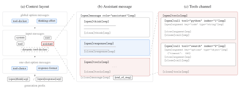
消息与区域
上下文的顶层单位是消息；按来源，消息分为两类（图 16a）。输入消息将请求中的 messages 字段序列化，涵盖常见的 system、user、assistant 和 tool 角色。选项消息把请求选项转换为模型在上下文中读取的指令，其位置反映其作用范围。全局选项——工具声明（type="tool-declare"）和推理强度设置——位于所有输入消息之前：它们控制整个会话且很少变化，因此修改它们本来就会使 KV 缓存失效。单次请求选项（tool_choice、response_format）附加在输入消息之后，使逐请求的变化不会破坏历史 KV 缓存。第三类是输入选项消息，它与输入消息交错排列，用于在会话中途补充或覆盖全局选项。这一机制支持动态加载工具：对话过程中检索或加载的工具通过额外的 tool-declare 消息声明，此后模型可用的工具集便会扩展，而无需重新构建此前的上下文。
通道
工具调用
在 tools 通道中，每次调用都带有 tool 和 index 属性；index 对同一条消息中的并行调用编号，每条工具结果消息都重复对应的 tool/index 属性对，并按照其调用的顺序排列，使结果与调用能够明确对应。参数具有类型：字符串参数以原始文本呈现，其他 JSON 类型的值则采用紧凑序列化。因此，代码等自由格式文本是一等对象，而非经过转义的 JSON 字符串。对于无法拆分为带类型参数块的输入，提供纯 JSON 后备块；该块仅出现在输入词元中，绝不出现在模型输出中，并且训练时会屏蔽其损失。
推理强度与选项
推理强度通过类型为 thinking-effort 的全局选项消息提供，该消息插入工具声明之后、输入消息之前。消息用自然语言说明所请求的强度等级，并作为生成约束指令发挥作用，而不是修改生成前缀或暴露词元预算。模式定义预留了四个等级（low、medium、high 和 max），Kimi K3 支持其中的一个子集。这种表示将强度接口与模板语法解耦，并直接对应第 4.1.1 节和第 4.1.2 节所述的以推理强度为条件的训练。
更一般地说，这也是所有选项消息的共同实现方式：tool_choice、response_format 和 thinking-effort 都被转换为放入上下文中的简短自然语言指令，而非专用的特殊语法。由于预训练模型已经能够很好地遵循这类指令，新增选项只需很少甚至无需额外训练，这直接体现了前述低对齐代价的设计原则。
译本与许可
本页为 arXiv 2607.24653v2 的非官方中文译本。原报告来自 Moonshot AI / Kimi Team；官方仓库中的同版报告适用 Kimi K3 License（包括相关文档）。译文修改了自然语言表述，作者署名、参考文献和原图保持原文。查看随附的原始许可全文。